<!doctype html>
<html lang="en">
<head>
  <meta charset="utf-8">
  <meta name="viewport" content="width=device-width, initial-scale=1">
  <title>arxiv digest — 2026-06-23</title>
  <style>
:root {
  --bg: #ffffff;
  --fg: #1f2328;
  --muted: #59636e;
  --border: #d0d7de;
  --card: #f6f8fa;
  --link: #0969da;
}
body {
  max-width: 980px;
  margin: 0 auto;
  padding: 2rem 1rem 5rem;
  font-family: -apple-system, BlinkMacSystemFont, "Segoe UI", Helvetica, Arial, sans-serif;
  line-height: 1.55;
  color: var(--fg);
  background: var(--bg);
}
a { color: var(--link); }
img { max-width: 100%; height: auto; }
pre, code { background: var(--card); border-radius: 6px; }
pre { padding: 1rem; overflow-x: auto; }
blockquote { border-left: 4px solid var(--border); padding-left: 1rem; color: var(--muted); }
details { margin: 0.6rem 0; }
summary { cursor: pointer; font-weight: 600; }
.paper-figures-scroll {
  display: flex;
  gap: 1rem;
  overflow-x: auto;
  overscroll-behavior-x: contain;
  padding: 0.75rem 0.25rem 1rem;
  margin: 1rem 0 1.25rem;
  border-top: 1px solid var(--border);
  border-bottom: 1px solid var(--border);
  scroll-snap-type: x proximity;
}
.paper-figure-card {
  flex: 0 0 min(260px, 72vw);
  scroll-snap-align: start;
  background: var(--card);
  border: 1px solid var(--border);
  border-radius: 12px;
  padding: 0.55rem;
}
.paper-figure-card img {
  display: block;
  width: 100%;
  max-height: 240px;
  object-fit: contain;
  background: white;
  border-radius: 8px;
}
.paper-figure-caption {
  display: block;
  margin-top: 0.5rem;
  color: var(--muted);
  font-size: 0.85rem;
}
.figure-strip-hint {
  color: var(--muted);
  font-size: 0.9rem;
  margin-bottom: -0.3rem;
}
</style>
  <!-- MathJax: renders $...$ inline math and $$...$$ display math, plus
       \(...\) and \[...\]. Loaded from the official CDN; works offline
       once cached. Configured to skip code/pre blocks so arxiv IDs that
       look like dollar amounts don't get mangled. -->
  <script>
    window.MathJax = {
      tex: {
        inlineMath: [['$', '$'], ['\\(', '\\)']],
        displayMath: [['$$', '$$'], ['\\[', '\\]']],
        processEscapes: true,
        processEnvironments: true
      },
      options: {
        skipHtmlTags: ['script', 'noscript', 'style', 'textarea', 'pre', 'code'],
        ignoreHtmlClass: 'tex2jax_ignore',
        processHtmlClass: 'tex2jax_process'
      }
    };
  </script>
  <script id="MathJax-script" async
    src="https://cdn.jsdelivr.net/npm/mathjax@3/es5/tex-chtml.js"></script>
</head>
<body>
<header style="background-color: #333; color: white; padding: 15px; margin-bottom: 20px;">
  <h1 style="margin: 0; font-size: 24px;">
    <a href="https://ochelpan.github.io/arXiv_clean/" style="color: white; text-decoration: none;">Main</a>
  </h1>
</header>

<h1>Daily arXiv Report</h1>

<hr>
<p>
<a href="index.html">← Index</a>
 · <a href="papers_03.html">← Previous</a> · <a href="papers_05.html">Next →</a>
</p>
<hr>

<h2>Papers 61–80</h2>
<p><a id="paper-2606.22025"></a></p>
<h3 id="distance-from-home-matters-investigation-of-a-basic-movement-strategy"><a href="http://arxiv.org/abs/2606.22025v1">Distance from home matters: Investigation of a basic movement strategy</a></h3>
<p><strong>Authors:</strong> Mohsen Ghasemi Nezhadhaghighi, Yahya Khalili, Behafarid Hemmatpour, Abolfazl Ramezanpour<br>
<strong>Type:</strong> theory · <strong>Category:</strong> disordered systems and neural networks · <strong>PDF:</strong> <a href="https://arxiv.org/pdf/2606.22025v1">https://arxiv.org/pdf/2606.22025v1</a><br>
<strong>Analysis basis:</strong> full PDF text, analyzed in chunks
<strong>Topic relevance:</strong> <code>non-equilibrium dynamics</code> <strong>3/5</strong> · <code>non-equilibrium universality</code> <strong>3/5</strong> · <code>driven-dissipative phase transition</code> <strong>2/5</strong> · <code>methods for driven-dissipative</code> <strong>2/5</strong> · <code>Frenkel-Kontorova</code> <strong>1/5</strong> · <code>Keldysh / 2PI / non-Gaussian methods</code> <strong>1/5</strong></p>
<div class="figure-strip-hint">↔ Scroll figures horizontally</div>
<div class="paper-figures-scroll">
<figure class="paper-figure-card">
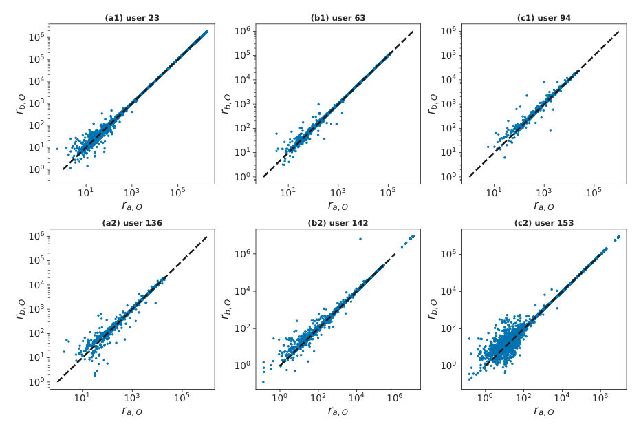
<figcaption class="paper-figure-caption"><b>Fig 1.</b> FIG. 1. Empirical data for (Euclidean) distances rb,O, ra,O (in meters) from origin O in a single</figcaption>
</figure>
<figure class="paper-figure-card">
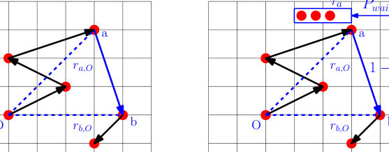
<figcaption class="paper-figure-caption"><b>Fig 2.</b> FIG. 2. Illustration of the movement strategy. The probability of going from a to b in a trip</figcaption>
</figure>
<figure class="paper-figure-card">
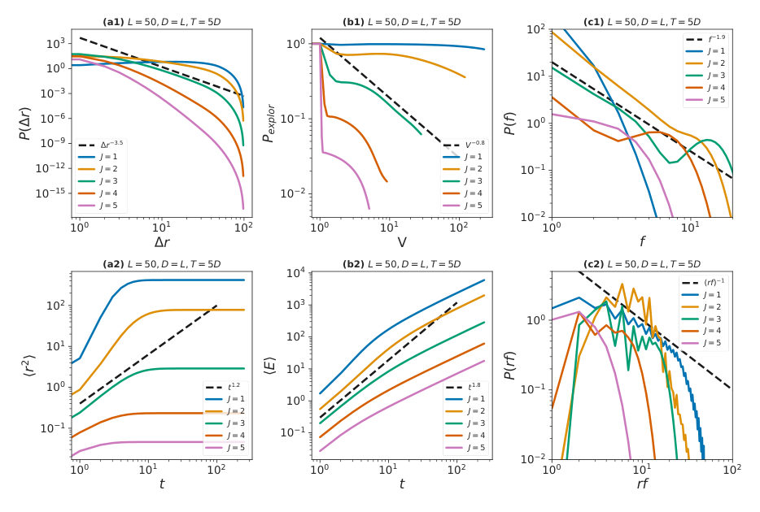
<figcaption class="paper-figure-caption"><b>Fig 3.</b> FIG. 3. Main quantities of the effective model for T = 5L time steps with L = 50, D = L. Panel</figcaption>
</figure>
<figure class="paper-figure-card">
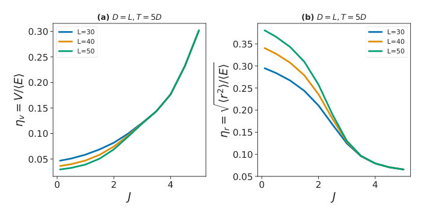
<figcaption class="paper-figure-caption"><b>Fig 4.</b> FIG. 4. Efficiencies of the effective model for T = 5L time steps with L = 30, 40, 50, D = L.</figcaption>
</figure>
<figure class="paper-figure-card">
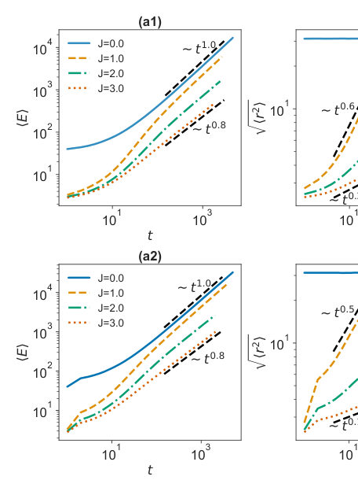
<figcaption class="paper-figure-caption"><b>Fig 5.</b> FIG. 5. The mean consumed energy ⟨E⟩, the mean-squared displacement p</figcaption>
</figure>
</div>

<p><strong>Summary.</strong> This work models human mobility on a 2D lattice by assuming that trip destinations are biased based on the ratio of their distance from home relative to the starting point's distance. By simulating this process, the authors demonstrate that even simple rules can reproduce complex statistical features like power-law decay in movement distributions. This provides a theoretical framework for understanding energy-efficient or habit-driven spatial exploration.</p>
<p><strong>Why it may be interesting.</strong> Although applied to social physics, the underlying dynamics involve non-equilibrium processes, anomalous diffusion ($\langle r^2 
angle \sim t^
u$), and scaling laws derived from optimizing movement costs—concepts relevant to energy minimization in complex quantum systems or understanding transport in disordered media.</p>
<details>
<summary>Detailed structure</summary>
<p><strong>Main problem.</strong> The study investigates the fundamental dynamical rules governing human mobility patterns by exploiting empirical correlations between trip endpoints and the starting point (home). The goal is to model how movement decisions are influenced by spatial constraints relative to a fixed origin.</p>
<p><strong>Main result.</strong> A simple movement dynamic, where transition probabilities depend on the ratio of endpoint distances to the home, can qualitatively reproduce key empirical statistics of human mobility, such as power-law distributions for traveled distances and visitation frequencies. The model also incorporates temporal effects like queue waiting times.</p>
<p><strong>Method.</strong> The authors develop and simulate a discrete-time movement process on a 2D lattice using master equations to track site occupancy probabilities over time steps.</p>
<p><strong>Model / system.</strong> The system is an agent moving on a square lattice, where the transition probability $W_t(a 	o b)$ is governed by an exponential function of the ratio of distances from the origin: $\exp\left\{-J (r_{b,O}/r_{a,O})
ight\}$. The model can be extended to include waiting times in queues.</p>
<p><strong>Key observables.</strong> Power-law distributions for traveled distance $P(\Delta r)$, mean-square displacement $\langle r^2 
angle$, exploration probability ($P_{	ext{explor}}$), and efficiency metrics ($\eta_r, \eta_v$).</p>
<p><strong>Important parameters / regimes.</strong> The control parameter $J$ dictates the strength of the 'distance from home' bias; waiting time parameters like $\gamma$ modulate temporal effects.</p>
<p><strong>Assumptions / limitations.</strong> The core assumption is that movement probability depends on the ratio of endpoint distances to the origin. The model assumes users perform sequential trips satisfying demands in a structured manner.</p>
<p><strong>Figures summary.</strong> Figures illustrate how efficiency metrics ($\eta_r, \eta_v$) and exploration probabilities vary with $J$, showing optimal regimes; other figures compare Cumulative Distribution Functions (CDFs) for travel distance, waiting time, and visits under different queueing assumptions.</p>
<p><strong>Paper structure.</strong> The paper establishes the motivation from empirical observations regarding endpoint correlations. It then develops a mathematical model based on these ratios, derives the master equations for site occupancy and distance distribution, and finally analyzes the results by varying parameters like $J$ (and $\gamma$) to match known statistical behaviors.</p>
</details>
<details>
<summary>Abstract</summary>
<p>Discovering the fundamental dynamical rules that generate the main statistical features of human mobility is essential for understanding the mechanisms underlying such processes. A prominent example is the exploration and preferential return model and its generalizations, which successfully reproduce several empirical findings. Here, we exploit another observation: the endpoint distances of a trip from the trajectory's starting point are strongly correlated. We consider a movement process in which each user performs a sequence of trips to satisfy a set of demands, given a spatial distribution of suppliers on a two-dimensional lattice. In each trip, destinations are chosen with a probability that depends on the ratio of the initial and final distances from the user's origin (home). We show that even a single agent with uniformly distributed demands and suppliers qualitatively reproduces key empirical statistics, such as the power-law distribution of traveled distances. The results are also robust to introducing interactions between agents via queues and incorporating more realistic demand and supplier distributions.</p>
</details>
<p><sub><a href="#top">↑ back to top</a></sub></p>

<p><a id="paper-2606.23350"></a></p>
<h3 id="irreversibility-enhances-quantum-enhanced-markov-chain-monte-carlo"><a href="http://arxiv.org/abs/2606.23350v1">Irreversibility Enhances Quantum-Enhanced Markov-Chain Monte Carlo</a></h3>
<p><strong>Authors:</strong> Kefan Cao, Zidong Cui, Lei Wang, Ying Tang<br>
<strong>Type:</strong> theory · <strong>Category:</strong> statistical mechanics · <strong>PDF:</strong> <a href="https://arxiv.org/pdf/2606.23350v1">https://arxiv.org/pdf/2606.23350v1</a><br>
<strong>Analysis basis:</strong> full PDF text, analyzed in chunks
<strong>Topic relevance:</strong> <code>methods for driven-dissipative</code> <strong>3/5</strong> · <code>non-equilibrium dynamics</code> <strong>3/5</strong> · <code>non-equilibrium universality</code> <strong>2/5</strong> · <code>Keldysh / 2PI / non-Gaussian methods</code> <strong>1/5</strong> · <code>analog quantum simulation</code> <strong>1/5</strong> · <code>correlated / nonlocal dissipation</code> <strong>1/5</strong> · <code>driven-dissipative phase transition</code> <strong>1/5</strong></p>
<div class="figure-strip-hint">↔ Scroll figures horizontally</div>
<div class="paper-figures-scroll">
<figure class="paper-figure-card">
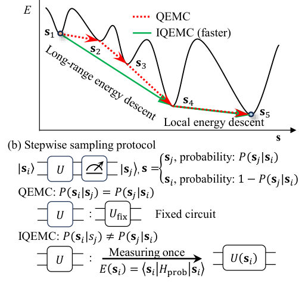
<figcaption class="paper-figure-caption"><b>Fig 1.</b> Figure 1. Schematic of the irreversible quantum-enhanced Monte Carlo (IQEMC). (a) Convergence behavior of quantum-enhanced MCMC (QEMC) and IQEMC. IQEMC achieves fast energy descent at high energies and stable tran- sitions at low energies. (b) IQEMC constructs a quantum circuit that violates detailed balance, based on the initial en- ergy E(si) computed once for each input configuration |si⟩.</figcaption>
</figure>
<figure class="paper-figure-card">
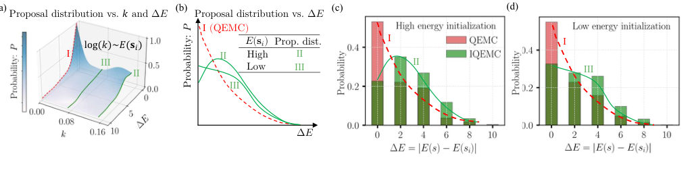
<figcaption class="paper-figure-caption"><b>Fig 2.</b> Figure 2. Energy-adaptive proposals via Landau–Zener transitions enhance sampling efficiency. (a) Landau–Zener modulation of the proposal distribution with various sweep rates k. (b) For high-energy and low-energy initial states in the 1D Ising chain (n = 6, T = 0.1, C = 0.15), IQEMC employs an adaptive proposal distribution (green), whereas QEMC uses a fixed proposal distribution (red). (c) The proposal distribution for high-energy states in IQEMC (green) enables large-∆E transitions. (d) For low-energy states, IQEMC favors small-∆E transitions. QEMC (red) yields local moves across all energies.</figcaption>
</figure>
<figure class="paper-figure-card">
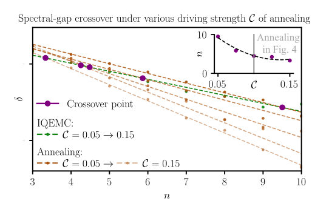
<figcaption class="paper-figure-caption"><b>Fig 3.</b> Figure 3. The critical system size, above which IQEMC converges faster than annealing, becomes smaller under in- creasing driving strength C (T = 0.1). With different C, the IQEMC (green) surpasses annealing (orange with grad- ual transparency) at the system sizes marked by the purple dots. Inset: the crossover system size decreases with C.</figcaption>
</figure>
<figure class="paper-figure-card">
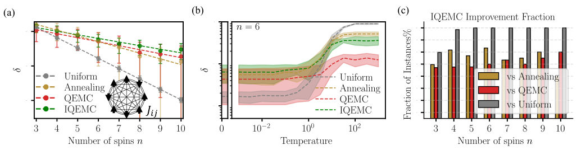
<figcaption class="paper-figure-caption"><b>Fig 4.</b> Figure 4. Convergence benchmark for fully connected random Ising models at T = 0.1 and C = 0.15. (a) Spectral gap versus spin number n. IQEMC (green) outperforms the three baselines (gray: uniform, orange: annealing, red: QEMC) across 150 instances. (b) Spectral gap versus temperature for n = 6. IQEMC exhibits advantages at low temperatures. (c) Fraction of spectral-gap improvement by IQEMC over the three baselines. As the system size n increases, IQEMC’s acceleration becomes more dominant.</figcaption>
</figure>
<figure class="paper-figure-card">
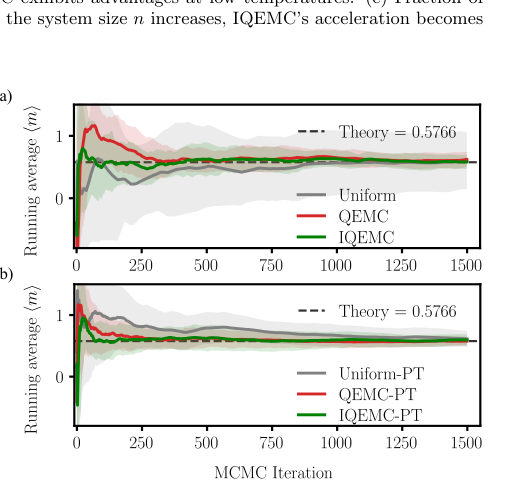
<figcaption class="paper-figure-caption"><b>Fig 5.</b> Figure 5. Convergence of the average magnetization over 10 independent realizations for a single instance at T = 0.1. (a) Magnetization versus MCMC steps for uniform sampling (gray), QEMC (red), and IQEMC (green) on a fully con- nected random Ising model (n = 6). (b) Results for the three methods combined with the strategy of parallel tempering. IQEMC has the fastest convergence in both cases.</figcaption>
</figure>
</div>

<p><strong>Summary.</strong> This paper introduces an Irreversible Quantum-Enhanced Markov-Chain Monte Carlo (IQEMC) algorithm to improve sampling efficiency for physical models like the Ising spin glass. By intentionally breaking detailed balance using energy-dependent proposals, IQEMC achieves faster convergence than standard QEMC methods. This work establishes irreversibility as a powerful and physically justifiable tool for accelerating quantum simulations.</p>
<p><strong>Why it may be interesting.</strong> It provides a concrete, physically grounded mechanism—breaking detailed balance via energy dependence—to enhance sampling efficiency in complex systems, which is relevant for simulating non-equilibrium dynamics or highly frustrated quantum states.</p>
<details>
<summary>Detailed structure</summary>
<p><strong>Main problem.</strong> The research investigates whether introducing irreversibility into Quantum-Enhanced Markov-Chain Monte Carlo (QEMC) sampling can accelerate convergence rates compared to standard methods.</p>
<p><strong>Main result.</strong> An irreversible quantum-enhanced MCMC (IQEMC) method was developed that successfully accelerates sampling by exploiting energy dependence in the proposal mechanism, establishing irreversibility as a physical enhancement route for QEMC.</p>
<p><strong>Method.</strong> The authors modify the transition kernel by introducing state-dependent proposals guided by Landau-Zener transitions, ensuring global balance while violating detailed balance to accelerate mixing.</p>
<p><strong>Model / system.</strong> The study uses the Ising model (e.g., fully connected random Ising model) whose equilibrium distribution is governed by a classical Hamiltonian $H$. The sampling process involves quantum evolution approximated via Trotterization.</p>
<p><strong>Key observables.</strong> Spectral gap ($\delta$), Autocorrelation Function (ACF), Integrated Autocorrelation Time ($ au_{    ext{int}}$), and average magnetization $\langle m 
angle$.</p>
<p><strong>Important parameters / regimes.</strong> System size ($n$), temperature ($T$), driving strength ($C$), and the state-dependent sweep rate $k(s_i)$.</p>
<p><strong>Assumptions / limitations.</strong> The method assumes that the global balance condition can be maintained while violating detailed balance, and convergence is characterized by the spectral gap derived from the Markov generator.</p>
<p><strong>Figures summary.</strong> Figures compare IQEMC's superior performance over QEMC and annealing baselines on spin-glass benchmarks; one figure illustrates the energy-adaptive nature of the proposal distribution modulation.</p>
<p><strong>Paper structure.</strong> The paper progresses by establishing the theoretical motivation (classical irreversibility), developing the IQEMC Hamiltonian, analyzing its convergence using spectral gap/autocorrelation time diagnostics, and benchmarking it against existing QEMC and classical annealing methods on spin-glass models.</p>
</details>
<details>
<summary>Abstract</summary>
<p>Detailed balance underlies conventional Markov-chain Monte Carlo (MCMC) algorithms. Yet in classical systems, breaking detailed balance generates irreversible probability currents and can accelerate sampling. Whether irreversibility can similarly enhance quantum MCMC remains an intriguing question. Here we show that irreversibility provides a new route to improving the recent quantum-enhanced MCMC (QEMC), which combines quantum proposals with classical acceptance. By introducing state-dependent proposals that break detailed balance while preserving the target stationary distribution, we develop an irreversible quantum-enhanced Monte Carlo (IQEMC). Guided by Landau-Zener transitions, IQEMC promotes large energy descents from high-energy states while maintaining stable transitions near low-energy states. On spin-glass benchmarks, IQEMC outperforms QEMC without increasing computational complexity and, unlike the annealing baseline, exhibits a spectral gap that increases with system size and annealing speed. These results establish irreversibility as a physically grounded mechanism for enhancing quantum MCMC.</p>
</details>
<p><sub><a href="#top">↑ back to top</a></sub></p>

<p><a id="paper-2606.21903"></a></p>
<h3 id="nonlocal-fractional-kardar-parisi-zhang-dynamics-of-grain-boundaries"><a href="http://arxiv.org/abs/2606.21903v1">Nonlocal fractional Kardar-Parisi-Zhang dynamics of grain boundaries</a></h3>
<p><strong>Authors:</strong> Kai Zhao<br>
<strong>Type:</strong> both · <strong>Category:</strong> statistical mechanics · <strong>PDF:</strong> <a href="https://arxiv.org/pdf/2606.21903v1">https://arxiv.org/pdf/2606.21903v1</a><br>
<strong>Analysis basis:</strong> full PDF text, analyzed in chunks
<strong>Topic relevance:</strong> <code>non-equilibrium dynamics</code> <strong>3/5</strong> · <code>non-equilibrium universality</code> <strong>3/5</strong> · <code>driven-dissipative phase transition</code> <strong>2/5</strong> · <code>Frenkel-Kontorova</code> <strong>1/5</strong> · <code>Keldysh / 2PI / non-Gaussian methods</code> <strong>1/5</strong> · <code>correlated / nonlocal dissipation</code> <strong>1/5</strong> · <code>methods for driven-dissipative</code> <strong>1/5</strong></p>
<div class="figure-strip-hint">↔ Scroll figures horizontally</div>
<div class="paper-figures-scroll">
<figure class="paper-figure-card">
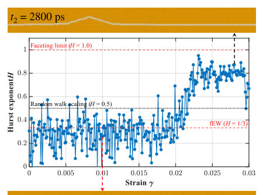
<figcaption class="paper-figure-caption"><b>Fig 1.</b> FIG. 1. Evolution of the Hurst exponent for the GB morphology at T = 300 K. MD snapshots of the atomic configuration at two different moments, t1 = 1000 ps and t2 = 2800 ps, which typically represent the pre- yield and post-yield status, respectively, are also presented. It is observed that in the pre-yield regime, the quasi-1D GB morphology is approximately a straight line with slight fluctuations, while a faceted protrusion is nucleated in the post-yield regime. Pre-yield regime. At small strains, 𝐻 stabilizes at 𝐻≅ 0.33. This value lies below the uncorrelated random- walk limit ( 𝐻= 0.5 ), demonstrating that 1/𝑟 elasticity suppresses stochastic fluctuations. The interface is in a...</figcaption>
</figure>
<figure class="paper-figure-card">
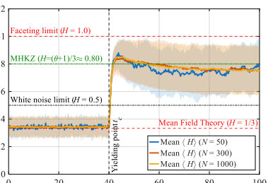
<figcaption class="paper-figure-caption"><b>Fig 2.</b> FIG. 2. Morphological transition and the anomalous Hurst exponent 𝐻 across the yield point 𝑡𝑐. Ensemble averages of 50, 300, and 1000 trajectories are obtained by solving Eq.(2) with the correlation exponent of the spatially-correlated noise 𝜖= 1.4. The jump of the Hurst exponent from 𝐻≅1/3 (pre-yield) to the anomalous 𝐻≅0.8 (post-yield) is triggered by the cooperative evolution of three underlying operators in the fKPZ equation. For 𝑡&lt; 𝑡𝑐, the boundary is pinned, manifesting as a damper ( 𝑀𝜋𝑉̃0 ℎ0 ⁄ ≫0 ) that suppresses long-wavelength fluctuations, while the KPZ nonlinearity is frozen (𝜆≅0). At the yield point 𝑡= 𝑡𝑐, the onset of the sliding velocity 𝑣0 induces the temporal homogenization...</figcaption>
</figure>
<figure class="paper-figure-card">
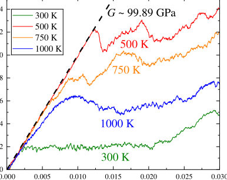
<figcaption class="paper-figure-caption"><b>Fig 3.</b> FIG. 3. Temperature-dependent stress-strain responses. The dashed black line represents the linear fit within the elastic regime, yielding an effective shear modulus of G ~ 99.89 GPa, which is in excellent agreement with the prediction of anisotropic elasticity. Remarkably, the extracted driving stresses exhibit a non-Arrhenius dependence of temperature [13,53,54], with the flow stress peaking at intermediate temperatures ( 𝜏500 𝐾&gt; 𝜏750 𝐾&gt; 𝜏1000 𝐾&gt; 𝜏300 𝐾). This anomalous behavior provides strong evidence for the interplay between disconnection avalanches and thermal fluctuations. At low temperatures (300 K), the structurally ordered interface facilitates facile, low- barrier glide of...</figcaption>
</figure>
</div>

<p><strong>Summary.</strong> This work models the kinetic roughening of grain boundaries under strain, showing that long-range elastic interactions fundamentally alter surface growth universality. The system transitions sharply from an Edwards-Wilkinson state to a super-rough fKPZ regime ($H \approx 0.8$) upon yielding. This anomalous scaling links GB dynamics directly to the physics observed in dynamic fracture fronts.</p>
<p><strong>Why it may be interesting.</strong> The connection between non-local elastic interactions in solid mechanics (GB motion/fracture) and universal growth equations like KPZ provides a rich platform for studying non-equilibrium dynamics far from equilibrium, relevant to understanding complex interfaces in condensed matter.</p>
<details>
<summary>Detailed structure</summary>
<p><strong>Main problem.</strong> The study investigates the kinetic roughening of driven grain boundaries (GBs), which are governed by long-range $1/r$ elastic interactions from disconnections, distinguishing it from conventional surface growth models.</p>
<p><strong>Main result.</strong> The system exhibits a sharp transition in morphology upon yielding, moving from a sub-diffusive Edwards-Wilkinson class ($H \approx 0.33$) to an anomalous fractional Kardar-Parisi-Zhang (fKPZ) regime ($H \approx 0.8$).</p>
<p><strong>Method.</strong> The research combines large-scale Molecular Dynamics simulations with theoretical derivation of the governing Stochastic Partial Differential Equation (SPDE), mapping $1/r$ elasticity onto a fractional Laplacian.</p>
<p><strong>Model / system.</strong> The physical system is grain boundaries in polycrystalline materials subjected to constant strain-rate shear loading. The dynamics are modeled by an overdamped Langevin equation for discrete disconnections, which is coarse-grained into the fKPZ equation.</p>
<p><strong>Key observables.</strong> Hurst exponent ($H$), universality classes (EW, KPZ), and the evolution of roughness with applied strain/time.</p>
<p><strong>Important parameters / regimes.</strong> Strain rate ($\dot{\gamma}$), Temperature ($T$), Nonlocal elastic interaction strength ($1/r$ kernel).</p>
<p><strong>Assumptions / limitations.</strong> The theory assumes that $1/r$ elasticity can be mapped onto a fractional Laplacian operator, and the analysis relies on mapping GB dynamics to known universality classes like dynamic fracture.</p>
<p><strong>Figures summary.</strong> Figure 1 illustrates the evolution of the Hurst exponent ($H$) across pre-yield ($H \approx 0.33$) and post-yield ($H \approx 0.8$) regimes. Figure 3 shows temperature-dependent stress-strain responses, confirming non-Arrhenius behavior.</p>
<p><strong>Paper structure.</strong> The paper develops by first establishing the physical model (MD simulations of GBs), deriving the continuum equation (fKPZ) from discrete dynamics, analyzing the pre-yield and post-yield regimes separately using spectral analysis, and finally comparing the resulting anomalous scaling to dynamic fracture universality classes.</p>
</details>
<details>
<summary>Abstract</summary>
<p>The kinetic roughening of driven grain boundaries (GBs) is fundamentally mediated by the collective behavior of disconnections, whose long-range $1/r$ elastic interactions distinguish them from conventional growing surfaces. Through large-scale molecular dynamics simulations and a nonlocal fractional Kardar-Parisi-Zhang (fKPZ) theory, we demonstrate that driven GBs undergo a sharp transition of morphology at the yield point, from the quenched Edwards-Wilkinson universality class ($H \approx 0.33$) to an anomalous fKPZ regime ($H \approx 0.8$), while the 1/r nonlocal elasticity manifests as the fractional relaxation of GB morphology. The results show that the avalanche noise arrests the gradient catastrophe induced by the KPZ nonlinearity. Governed by the nonlocal elastic kernels, the resulting morphology breaks the Gaussian self-affinity and parallels the universality class of dynamic fracture.</p>
</details>
<p><sub><a href="#top">↑ back to top</a></sub></p>

<p><a id="paper-2606.22343"></a></p>
<h3 id="probabilistic-storage-and-retrieval-of-quantum-superchannels-for-retrospective-intervention"><a href="http://arxiv.org/abs/2606.22343v1">Probabilistic Storage and Retrieval of Quantum Superchannels for "Retrospective'' Intervention</a></h3>
<p><strong>Authors:</strong> Wataru Yokojima, Jisho Miyazaki, Mio Murao<br>
<strong>Type:</strong> theory · <strong>Category:</strong> quantum information and computing · <strong>PDF:</strong> <a href="https://arxiv.org/pdf/2606.22343v1">https://arxiv.org/pdf/2606.22343v1</a><br>
<strong>Analysis basis:</strong> full PDF text, analyzed in chunks
<strong>Topic relevance:</strong> <code>methods for driven-dissipative</code> <strong>3/5</strong> · <code>quantum measurements</code> <strong>3/5</strong> · <code>measurement-induced transitions</code> <strong>2/5</strong> · <code>Keldysh / 2PI / non-Gaussian methods</code> <strong>1/5</strong> · <code>correlated / nonlocal dissipation</code> <strong>1/5</strong> · <code>driven-dissipative phase transition</code> <strong>1/5</strong> · <code>entanglement &amp; information structure</code> <strong>1/5</strong></p>
<div class="figure-strip-hint">↔ Scroll figures horizontally</div>
<div class="paper-figures-scroll">
<figure class="paper-figure-card">
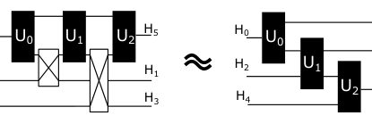
<figcaption class="paper-figure-caption"><b>Fig 1.</b> Figure 2: Introducing ancillary systems and intervening with swap operations to obtain a staircase from the (2-slot) superchannel.</figcaption>
</figure>
<figure class="paper-figure-card">
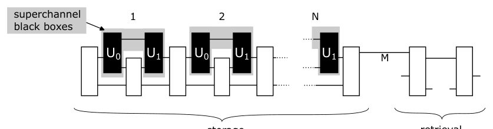
<figcaption class="paper-figure-caption"><b>Fig 2.</b> Figure 3: The storage and retrieval superchannels for pSAR of 1-slot unitary superchannels.</figcaption>
</figure>
<figure class="paper-figure-card">
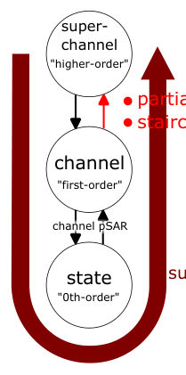
<figcaption class="paper-figure-caption"><b>Fig 3.</b> Figure 4: Hierarchy in higher-order computation and how the pSAR protocols climb it up and down.</figcaption>
</figure>
<figure class="paper-figure-card">
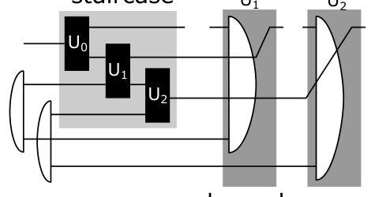
<figcaption class="paper-figure-caption"><b>Fig 4.</b> Figure 5: The channel-to-superchannel conversion protocol based on partial teleportation. The prepared states are all maximally entangled states |Ψ⟩:= Pd i=1 |ii⟩/ √</figcaption>
</figure>
<figure class="paper-figure-card">
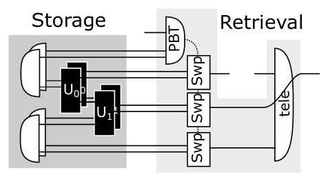
<figcaption class="paper-figure-caption"><b>Fig 5.</b> Figure 6: The pSAR protocol of unitary superchannels based on the partial teleportation and the port-based teleportation (PBT). We depict the simplest but nontrivial case N = 2 and K = 1. The storage circuit prepares maximally entangled states. The retrieval phase executes the measurement of PBT at the first tooth of the superchannel, and that of usual teleportation at the second tooth.</figcaption>
</figure>
</div>

<p><strong>Summary.</strong> This paper develops advanced theoretical protocols to probabilistically store and retrieve unknown unitary superchannels, which model complex quantum processes with intervention slots. By comparing partial teleportation against a novel 'staircase backstitch' method, the authors demonstrate that the latter achieves asymptotically perfect retrieval probability for retrospective interventions. This advances our understanding of fundamental limits in quantum memory beyond simple channel storage.</p>
<p><strong>Why it may be interesting.</strong> This work pushes the boundaries of quantum memory by tackling higher-order temporal structures (superchannels) and introducing 'retrospective' control. The comparison between asymptotic protocols is highly relevant for understanding fundamental limits on quantum information storage.</p>
<details>
<summary>Detailed structure</summary>
<p><strong>Main problem.</strong> The research addresses the challenging task of Probabilistic Storage-and-Retrieval (pSAR) for unknown quantum superchannels, extending previous work to higher-order structures involving 'definite-causal unitary superchannels' that require 'retrospective' intervention.</p>
<p><strong>Main result.</strong> Two protocols are proposed: partial teleportation and staircase backstitch. The staircase backstitch protocol is shown to achieve unit success probability asymptotically as the number of storage queries increases, surpassing earlier methods in the large N limit.</p>
<p><strong>Method.</strong> The authors employ advanced quantum information theory tools, including formalizing pSAR using Choi operators, solving constraints via Semidefinite Programming (SDP), and comparing different circuit constructions like partial teleportation versus deterministic backstitching.</p>
<p><strong>Model / system.</strong> The core model is the quantum superchannel ($   ext{eC}$), which represents a sequence of unitary channels with open slots allowing arbitrary interventions. The focus is on unitary superchannels ($  ext{eU}$) and their probabilistic storage/retrieval capability.</p>
<p><strong>Key observables.</strong> Maximum success probability ($p_{\max}$), the ability to achieve 'retrospective' intervention, and the comparison between different pSAR protocols (e.g., $p_{	ext{tele}}^N$ vs. asymptotic limit).</p>
<p><strong>Important parameters / regimes.</strong> Number of storage queries ($N$), number of slots ($K$), and the dimensions of associated Hilbert spaces $(d_0, \dots, d_{2K+1})$.</p>
<p><strong>Assumptions / limitations.</strong> The analysis focuses on definite causal structures (not indefinite ones), and some results rely on SDP formulations which provide upper bounds for multi-slot cases.</p>
<p><strong>Figures summary.</strong> Figures illustrate the structure of $K$-slot quantum superchannels, the process of obtaining a staircase from a superchannel, and detailed circuit diagrams for both partial teleportation and staircase backstitch protocols.</p>
<p><strong>Paper structure.</strong> The paper progresses by first formalizing pSAR for unitary superchannels (Section 2), proposing and comparing two distinct protocols in Section 3, deriving structural properties using mathematical tools like the comb formalism, and finally analyzing optimal probabilities via SDPs and symmetry arguments in later sections.</p>
</details>
<details>
<summary>Abstract</summary>
<p>Storing an unknown quantum computation in a quantum state and retrieving it at a desired later time is a challenging task, hindered by the no-programming theorem of quantum computations. In the previous studies on the task of probabilistic storage-and-retrieval (pSAR) of quantum channels, the maximum probability of exactly retrieving a single unknown unitary channel from a quantum state in which the unknown unitary has been encoded via multiple calls to the unknown unitary channel is derived. In this work, we consider a higher-order version of pSAR, the probabilistic storage-and-retrieval of definite-causal unitary superchannels, which are physically modeled by sequences of unitary channels with open slots where arbitrary channels can be inserted between the unitary channels for intervention. This task requires activating the ``retrospective'' intervention functionality on the superchannel, beyond its normal intervention functionality. We propose two protocols: partial teleportation, which is optimal for a small number of storage queries, and staircase backstitch, which achieves unit success probability asymptotically as the number of queries increases. We also derive a universal inversion protocol for unitary superchannels.</p>
</details>
<p><sub><a href="#top">↑ back to top</a></sub></p>

<p><a id="paper-2606.22127"></a></p>
<h3 id="emergence-of-boolean-facts-from-markovian-coarse-graining-in-relational-quantum-causal-processes"><a href="http://arxiv.org/abs/2606.22127v1">Emergence of Boolean Facts from Markovian Coarse-Graining in Relational Quantum Causal Processes</a></h3>
<p><strong>Authors:</strong> Yipeng Xu<br>
<strong>Type:</strong> theory · <strong>Category:</strong> other · <strong>PDF:</strong> <a href="https://arxiv.org/pdf/2606.22127v1">https://arxiv.org/pdf/2606.22127v1</a><br>
<strong>Analysis basis:</strong> full PDF text, analyzed in chunks
<strong>Topic relevance:</strong> <code>methods for driven-dissipative</code> <strong>3/5</strong> · <code>measurement-induced transitions</code> <strong>2/5</strong> · <code>quantum measurements</code> <strong>2/5</strong> · <code>Keldysh / 2PI / non-Gaussian methods</code> <strong>1/5</strong> · <code>correlated / nonlocal dissipation</code> <strong>1/5</strong> · <code>driven-dissipative phase transition</code> <strong>1/5</strong> · <code>entanglement &amp; information structure</code> <strong>1/5</strong></p>
<div class="figure-strip-hint">↔ Scroll figures horizontally</div>
<div class="paper-figures-scroll">
<figure class="paper-figure-card">
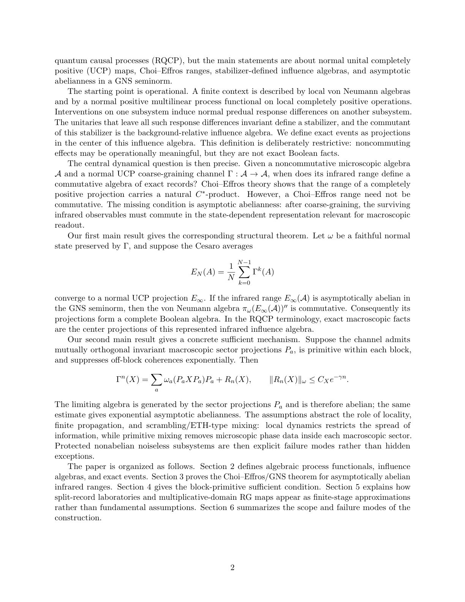
<figcaption class="paper-figure-caption"><b>Fig 1.</b> Low-resolution page preview, page 2</figcaption>
</figure>
<figure class="paper-figure-card">
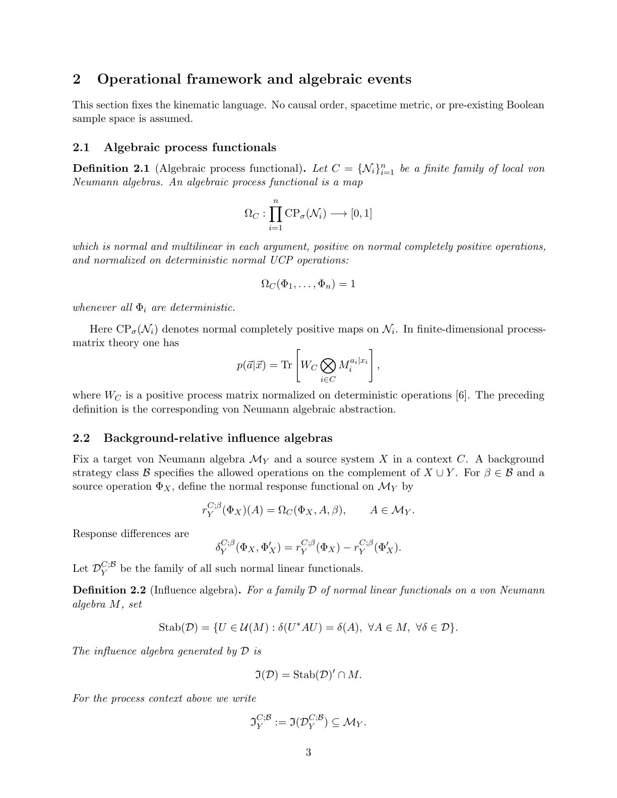
<figcaption class="paper-figure-caption"><b>Fig 2.</b> Low-resolution page preview, page 3</figcaption>
</figure>
<figure class="paper-figure-card">
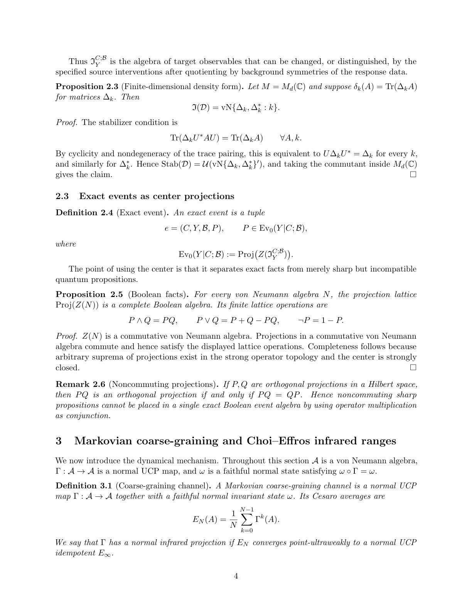
<figcaption class="paper-figure-caption"><b>Fig 3.</b> Low-resolution page preview, page 4</figcaption>
</figure>
<figure class="paper-figure-card">
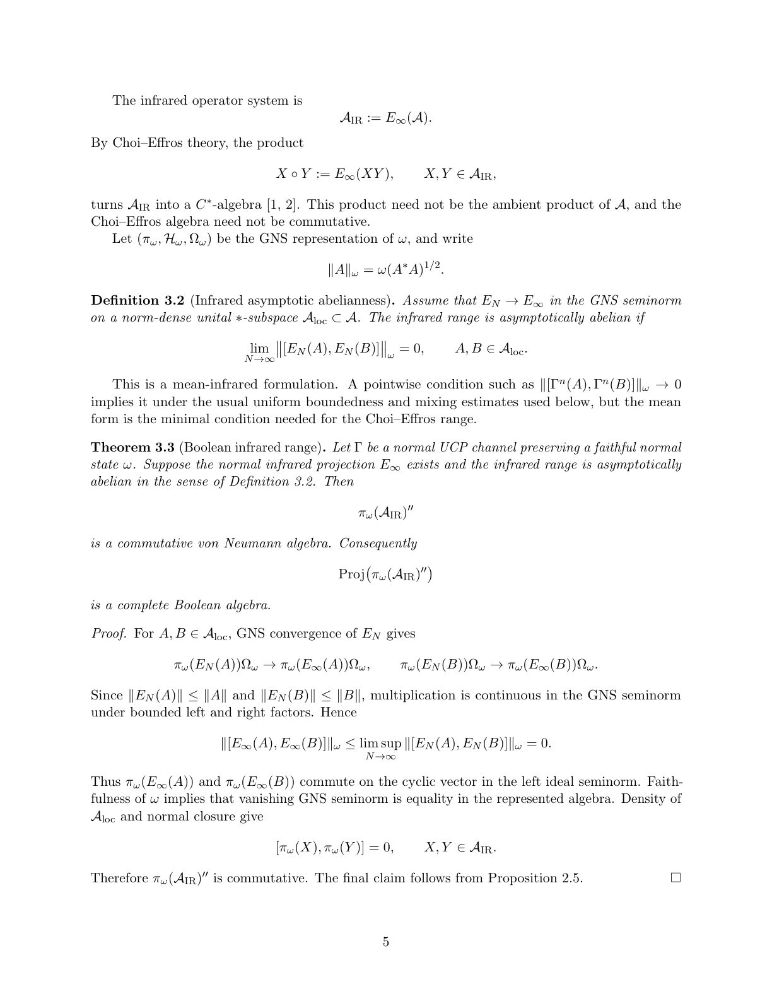
<figcaption class="paper-figure-caption"><b>Fig 4.</b> Low-resolution page preview, page 5</figcaption>
</figure>
<figure class="paper-figure-card">
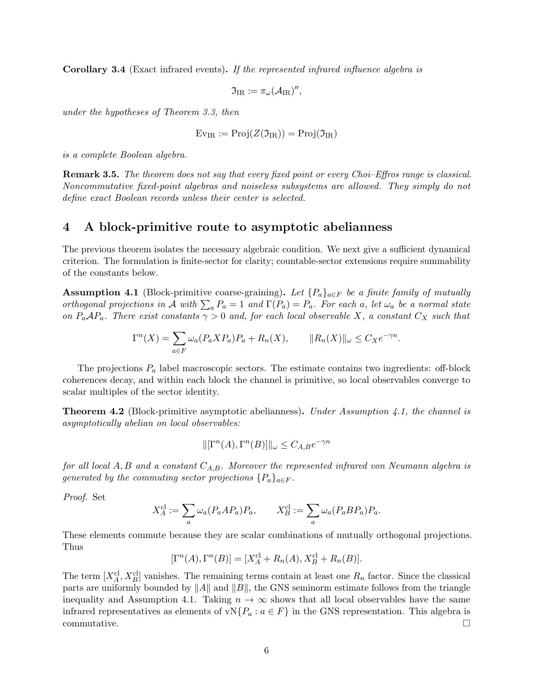
<figcaption class="paper-figure-caption"><b>Fig 5.</b> Low-resolution page preview, page 6</figcaption>
</figure>
</div>

<p><strong>Summary.</strong> This theoretical paper investigates the emergence of classical Boolean facts from complex quantum dynamics using algebraic methods. It shows that if a system undergoes repeated, state-preserving coarse-graining, the resulting macroscopic structure will possess classical (Boolean) properties only if the limiting algebra is asymptotically abelian. This provides a mathematical constraint on how 'classicality' can arise naturally in fundamental quantum theories.</p>
<p><strong>Why it may be interesting.</strong> This work provides a rigorous mathematical criterion—asymptotic commutativity under coarse-graining—for when quantum correlations naturally collapse into classical probabilistic structures, which is highly relevant for understanding decoherence and measurement in open quantum systems.</p>
<details>
<summary>Detailed structure</summary>
<p><strong>Main problem.</strong> The central question is whether classical Boolean facts can emerge naturally from local, completely positive quantum operations (coarse-graining) without being imposed as fundamental axioms.</p>
<p><strong>Main result.</strong> If the coarse-graining process leads to an infrared range that is asymptotically abelian, then the resulting algebra of 'exact' macroscopic events forms a complete Boolean algebra.</p>
<p><strong>Method.</strong> The analysis uses operator algebras, defining an 'influence algebra' based on quantum causal processes and examining the limit (Cesaro mean) of repeated coarse-graining channels.</p>
<p><strong>Model / system.</strong> The framework is built upon Relational Quantum Causal Processes (RQCP), involving local von Neumann algebras subjected to state-preserving normal unital completely positive coarse-graining channels ($\Gamma$).</p>
<p><strong>Key observables.</strong> Exact events are identified as projections within the center of the influence algebra, $   ext{Proj}(\mathcal{Z}(I_{C;B}^Y))$, and the key diagnostic is the asymptotic abelianness of the infrared range.</p>
<p><strong>Important parameters / regimes.</strong> The convergence rate ($\gamma$) in exponential suppression estimates, and the limit $N 	o \infty$ for the Cesaro averages.</p>
<p><strong>Assumptions / limitations.</strong> The result relies on assuming state-preserving normal unital completely positive coarse-graining channels and requires the infrared range to be asymptotically abelian.</p>
<p><strong>Paper structure.</strong> The paper first defines the algebraic machinery for identifying events via influence algebras. It then analyzes the dynamics using Markovian coarse-graining, culminating in theorems that link asymptotic abelianness of the resulting algebra to the structure being a complete Boolean algebra.</p>
</details>
<details>
<summary>Abstract</summary>
<p>We formulate an operator-algebraic mechanism by which exact Boolean records can arise from local completely positive quantum operations without being imposed as microscopic structure. The kinematic input is an algebraic process functional assigning probabilities to local normal completely positive operations in a finite operational context. From the predual response of a target algebra to source interventions, relative to a background strategy class, we define an influence algebra; exact events are then, by definition, the projections in its center. The dynamical question is whether nontrivial centers can be generated by coarse-graining rather than inserted through split-record laboratories. We address this question using state-preserving normal unital completely positive coarse-graining channels. If the Cesaro means of such a channel converge to a Choi-Effros infrared range and the range is asymptotically abelian in the GNS seminorm, then the represented infrared algebra is a commutative von Neumann algebra. Its projection lattice is therefore a complete Boolean algebra. We also give a finite-sector block-primitive criterion, motivated by locality and scrambling, which implies this asymptotic abelianness with exponential suppression of off-sector coherences and intra-sector fluctuations. The result is a conservative mathematical statement: classical facts are not identified with arbitrary projections of a Type-III local algebra, but with central projections selected by an asymptotically abelian completely positive infrared limit.</p>
</details>
<p><sub><a href="#top">↑ back to top</a></sub></p>

<p><a id="paper-2606.23493"></a></p>
<h3 id="high-quality-single-crystals-of-the-kagome-metals-nimath647mathin-and-nimath648mathsn-grown-from-pb-flux"><a href="http://arxiv.org/abs/2606.23493v1">High-quality single crystals of the kagome metals Ni$_3$In and Ni$_3$Sn grown from Pb flux</a></h3>
<p><strong>Authors:</strong> Fabian Garmroudi, Jennifer Coulter, Caitlin S. T. Kengle, Joe D. Thompson, Eric D. Bauer, Sean M. Thomas, Priscila F. S. Rosa<br>
<strong>Type:</strong> both · <strong>Category:</strong> strongly correlated electrons · <strong>PDF:</strong> <a href="https://arxiv.org/pdf/2606.23493v1">https://arxiv.org/pdf/2606.23493v1</a><br>
<strong>Analysis basis:</strong> full PDF text, analyzed in chunks
<strong>Topic relevance:</strong> <code>analog quantum simulation</code> <strong>3/5</strong> · <code>Kondo &amp; dissipative impurity</code> <strong>2/5</strong> · <code>non-equilibrium dynamics</code> <strong>2/5</strong> · <code>Keldysh / 2PI / non-Gaussian methods</code> <strong>1/5</strong> · <code>entanglement &amp; information structure</code> <strong>1/5</strong> · <code>exotic spin models in light-matter</code> <strong>1/5</strong> · <code>spintronics-quantum-optics interface</code> <strong>1/5</strong></p>
<div class="figure-strip-hint">↔ Scroll figures horizontally</div>
<div class="paper-figures-scroll">
<figure class="paper-figure-card">
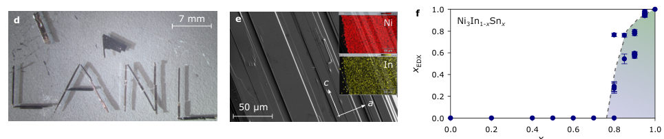
<figcaption class="paper-figure-caption"><b>Fig 1.</b> FIG. 1. a Hexagonal (P63/mmc) crystal structure of Ni3In and Ni3Sn, where Ni atoms form AB stacked kagome bilayers and In/Sn atoms occupy the center of the hexagons. b Densities of states of Ni3In and Ni3Sn from density functional theory. While the former has a flat band (vertical arrow) exactly at EF, the Fermi level is above the FB for the latter, allowing continous tuning of the FB edge with respect to EF in Ni3In1–xSnx. c Known phases in the ternary Ni–In–Sn system. Ni3In and Ni3Sn form a full solid solution Ni3In1–xSnx, various compositions of which were investigated in this work. d Large Ni3In single crystals (up to 7–8 mm long and up to 1–2 mm wide) obtained from a starting...</figcaption>
</figure>
<figure class="paper-figure-card">
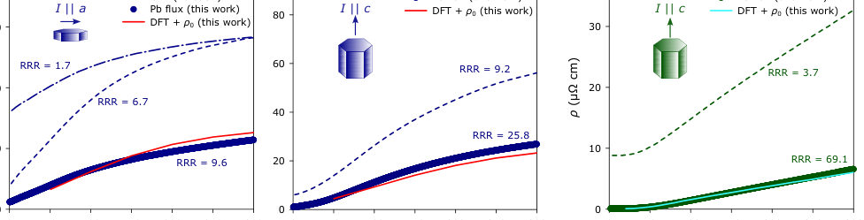
<figcaption class="paper-figure-caption"><b>Fig 2.</b> FIG. 2. a Temperature-dependent electrical resistivity of Ni3In with current applied along the crystallographic a-axis (within the kagome planes) and b along the c-axis (perpendicular to the kagome planes). c Same as in b, but for Ni3Sn. Single crystals grown from Pb flux (this work) exhibit significantly improved sample quality, as evidenced by much lower residual resistivities ρ0 and higher residual resistivity ratios (RRR), compared to crystals grown by iodine-assisted chemical vapor transport (CVT) [17] or molecular beam epitaxy (MBE) [30]. Solid lines represent first-principles DFT-based electron–phonon transport calculations performed within the Wigner transport formalism, including...</figcaption>
</figure>
<figure class="paper-figure-card">
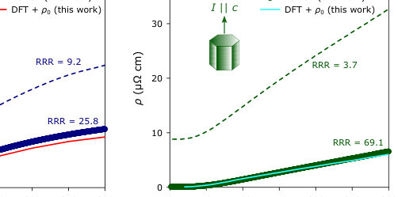
<figcaption class="paper-figure-caption"><b>Fig 3.</b> Figure 4 summarizes the results on the magnetic sus- ceptibility χ(T) and specific heat (C/T) of our Ni3In single crystals, in comparison to CVT-grown samples re- ported previously in Ref. [17]. It is evident that both the magnetic susceptibility (Fig. 4a) and the specific heat (Fig. 4c) of the Pb flux-grown crystals is substantially smaller than for the CVT-grown ones. A modified Curie–Weiss (CW) fit,</figcaption>
</figure>
<figure class="paper-figure-card">
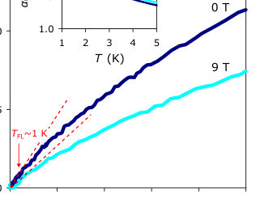
<figcaption class="paper-figure-caption"><b>Fig 4.</b> FIG. 3. a Low-temperature resistivity of Ni3In, measured with current along the a-axis. A comparison of ρ(T) at zero field and in an applied field µ0H = 9 T along b reveals a sizeable positive magnetoresistance and a non-Fermi-liquid temperature dependence down to very low temperatures in both cases (cf. panel b). Inset shows the field-dependent magnetoresistance MR = [ρ(H) −ρ(0)]/ρ(0) at 2 K. Crystals grown by iodine-assisted recrystallization [17] display vanish- ingly small MR, whereas crystals grown from Pb flux (this work) display a sizeable nonsaturating MR reaching ≈30 % at 10 T. b Both a plot of ρ −ρ0 versus T 2 and the local resis- tivity exponent, α(T) = d ln [ρ(T) −ρ0] /d ln T...</figcaption>
</figure>
<figure class="paper-figure-card">
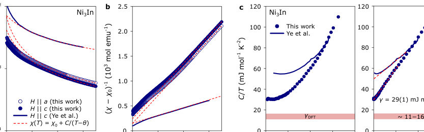
<figcaption class="paper-figure-caption"><b>Fig 5.</b> FIG. 4. a Temperature-dependent magnetic susceptibility of Ni3In single crystals, measured with an applied field µ0H = 0.1 T along the a- and c-axes. Red dashed lines represent least-squares fits to a modified Curie–Weiss law. For Pb-grown crystals, the data are well described in the temperature range 200 – 350 K. In contrast, crystals grown by iodine-assisted vapor transport [17] exhibit significantly larger χ(T) over the entire measured range and can be fitted down to 86 K. From our fits, we obtain an effective moment of µeff = 0.69 µB per Ni for both H ∥a and H ∥c, nearly a factor of two smaller than the value µeff = 1.3 µB reported for CVT-grown crystals [17] as well as Curie–Weiss...</figcaption>
</figure>
</div>

<p><strong>Summary.</strong> This work successfully develops a reliable Pb-flux method for growing large single crystals of kagome metals Ni3In and Ni3Sn. By characterizing these new samples, the authors find improved electronic quality compared to prior reports, revealing signatures of correlated electron behavior through measurements like specific heat and magnetoresistance.</p>
<p><strong>Why it may be interesting.</strong> While focused on solid-state materials, the investigation into flat bands and anomalous transport coefficients ($\gamma$ vs. DFT) touches upon strongly correlated electron physics, which shares conceptual links with many-body dynamics studied in AMO physics.</p>
<details>
<summary>Detailed structure</summary>
<p><strong>Main problem.</strong> The intrinsic electronic and magnetic properties of kagome metals like Ni3In are difficult to study due to the lack of large, high-quality single crystals.</p>
<p><strong>Main result.</strong> Growing these materials using a Pb-flux technique yields significantly higher quality crystals compared to previous methods, leading to measurements that suggest correlated electron behavior deviating from simple band theory predictions.</p>
<p><strong>Method.</strong> The authors report crystal growth via the Pb-flux method and characterize the resulting samples using transport (resistivity, magnetoresistance) and thermodynamic (specific heat, susceptibility) measurements, comparing them against DFT calculations.</p>
<p><strong>Model / system.</strong> The study focuses on bilayer kagome metals Ni3In and Ni3Sn, which are characterized by flat bands near the Fermi level. The electronic structure is modeled using Density Functional Theory (DFT), and transport properties are calculated using Boltzmann theory approximations.</p>
<p><strong>Key observables.</strong> Electrical resistivity ($
ho$), magnetoresistance (MR), Sommerfeld coefficient ($\gamma$), magnetic susceptibility ($\chi(T)$), and Kadowaki-Woods ratio ($A/\gamma^2$).</p>
<p><strong>Important parameters / regimes.</strong> Low temperatures ($<1.5 	ext{ K}$), Fermi level position relative to flat bands, and the flux growth temperature/composition.</p>
<p><strong>Assumptions / limitations.</strong> The comparison between measured $\gamma$ and DFT predictions suggests correlated electron behavior, but a simple rigid-band shift of $E_F$ cannot account for the discrepancy.</p>
<p><strong>Figures summary.</strong> Figures compare crystal structures (hexagonal), Density of States showing flat bands, and temperature dependencies of magnetic susceptibility ($\chi(T)$) and specific heat ($C/T$) between flux-grown and previously synthesized samples.</p>
<p><strong>Paper structure.</strong> The paper establishes the necessity of high-quality crystals via Pb-flux growth. It then compares physical measurements (resistivity, MR, $\gamma$, $\chi$) from these new crystals against prior work and theoretical calculations to deduce intrinsic electronic properties.</p>
</details>
<details>
<summary>Abstract</summary>
<p>The bilayer kagome metal Ni$_3$In has recently attracted attention due to the presence of a flat band located near the Fermi level, which has been associated with unconventional thermodynamic and electronic transport properties [Ye et al., Nat. Phys. 20, 610-614 (2024)]. However, further investigation of the intrinsic properties of this system has been hindered by the lack of large, high-quality single crystals. Here, we report the successful growth of Ni$_3$(In, Sn) single crystals using a Pb-flux technique. By optimizing the growth conditions, competing binary phases can be effectively suppressed, enabling the synthesis of single crystals with dimensions reaching several millimeters. We compare the physical properties of our Pb-flux-grown crystals to previously reported samples prepared by iodine-assisted chemical vapor transport and molecular beam epitaxy as well as to first-principles resistivity calculations. We find a significantly lower electrical resistivity in our crystals, in excellent agreement with calculations of resistivity from electron-phonon scattering, a sizeable non-saturating magnetoresistance, and a reduced Sommerfeld coefficient and magnetic susceptibility compared to previous experimental findings, which are likely related to differences in the Fermi level position. Our results establish Pb-flux growth as a reliable route for obtaining large single crystals of the bilayer kagome metals Ni$_3$(In, Sn) that are suitable for further thermodynamic and spectroscopic investigations of their intrinsic electronic and magnetic properties.</p>
</details>
<p><sub><a href="#top">↑ back to top</a></sub></p>

<p><a id="paper-2606.22452"></a></p>
<h3 id="kinetics-of-multistate-dna-polymerases"><a href="http://arxiv.org/abs/2606.22452v1">Kinetics of multistate DNA polymerases</a></h3>
<p><strong>Authors:</strong> Pierre Gaspard<br>
<strong>Type:</strong> theory · <strong>Category:</strong> statistical mechanics · <strong>PDF:</strong> <a href="https://arxiv.org/pdf/2606.22452v1">https://arxiv.org/pdf/2606.22452v1</a><br>
<strong>Analysis basis:</strong> full PDF text, analyzed in chunks
<strong>Topic relevance:</strong> <code>methods for driven-dissipative</code> <strong>3/5</strong> · <code>non-equilibrium dynamics</code> <strong>2/5</strong> · <code>non-equilibrium universality</code> <strong>2/5</strong> · <code>Keldysh / 2PI / non-Gaussian methods</code> <strong>1/5</strong> · <code>analog quantum simulation</code> <strong>1/5</strong> · <code>correlated / nonlocal dissipation</code> <strong>1/5</strong> · <code>driven-dissipative phase transition</code> <strong>1/5</strong></p>
<div class="figure-strip-hint">↔ Scroll figures horizontally</div>
<div class="paper-figures-scroll">
<figure class="paper-figure-card">
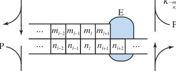
<figcaption class="paper-figure-caption"><b>Fig 1.</b> FIG. 1: Representation of the kinetic scheme for the model of two-state DNA polymerases. E denotes the open state of the polymerase, F its closed state, {mj} the nucleotide units composing the copy, {nj} those of the template, {mjP} the molecules of deoxyribonucleoside triphosphate, and P the molecules of inorganic pyrophosphate. The rates of the reactions are explained in the text.</figcaption>
</figure>
<figure class="paper-figure-card">
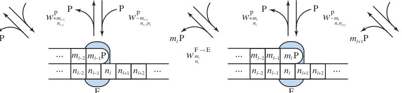
<figcaption class="paper-figure-caption"><b>Fig 2.</b> FIG. 2: Representation of the kinetic scheme of Fig. 1 after its reduction using the assumptions (2) of a Michaelis-Menten enzyme kinetics for the DNA polymerase. This reduced scheme corresponds to the kinetic equations (3) and (4), which are deduced in Appendix A. The notations are the same as in Fig. 1. The transition rates are given by Eqs. (6)-(9).</figcaption>
</figure>
<figure class="paper-figure-card">

<figcaption class="paper-figure-caption"><b>Fig 3.</b> FIG. 3: The mean growth velocity v and the error probability η versus the fraction ν(A) of units A in the Bernoulli chain forming the template sequence of length L = 105 for the nucleotide concentrations [dATP] = [dTTP] = 10−3 M. The dots are the results of Gillespie’s numerical algorithm using a statistics over Nstat = 105 copies. The lines are those of theory using the formulas (41) for the velocity and (44) for the error probability with Nloop = 10.</figcaption>
</figure>
<figure class="paper-figure-card">
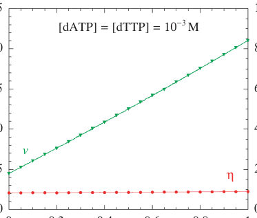
<figcaption class="paper-figure-caption"><b>Fig 4.</b> Figure 3 shows the mean growth velocity and the error probability of the replication process as a function of the fraction ν(A) = 1 −ν(T) of bases A in the random template sequence for fixed and equal nucleotide concentrations. In this case, the dependence of both quantities can be fitted to the following linear functions:</figcaption>
</figure>
<figure class="paper-figure-card">
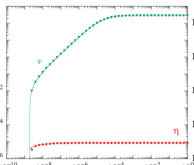
<figcaption class="paper-figure-caption"><b>Fig 5.</b> FIG. 4: The mean growth velocity v and the error probability η versus equal values for the nucleotide concentrations [dATP] = [dTTP]. Here, the template sequence is a Bernoulli chain with probabilities ν(A) = ν(T) = 0.5 and length L = 105. The dots are the results of Gillespie’s numerical algorithm using a statistics over Nstat = 105 copies. The lines are those of theory using the formulas (41) for the velocity and (44) for the error probability with Nloop = 10.</figcaption>
</figure>
</div>

<p><strong>Summary.</strong> This work develops advanced mathematical methods to calculate the kinetics of DNA replication by polymerases with multiple structural states. By applying iterative techniques to master equations, the authors derive exact formulas for key metrics like growth speed and error rate. This provides a powerful theoretical tool for analyzing complex biochemical processes far exceeding standard numerical simulation capabilities.</p>
<p><strong>Why it may be interesting.</strong> While focused on biochemistry, the rigorous application of master equation reduction techniques, steady-state analysis (e.g., IFS), and comparison between analytical/numerical approaches mirrors methodologies used in analyzing open quantum systems or reaction-diffusion processes where complex state spaces must be simplified.</p>
<details>
<summary>Detailed structure</summary>
<p><strong>Main problem.</strong> The paper investigates the kinetics of DNA replication catalyzed by polymerases that exhibit multiple structural states.</p>
<p><strong>Main result.</strong> Exact analytical solutions for growth velocity and error probability are derived using iterative mathematical methods, which prove significantly faster than direct numerical simulations.</p>
<p><strong>Method.</strong> The core method involves applying an iterative mathematical technique to solve the coupled master equations governing the system's time evolution in the long-time limit.</p>
<p><strong>Model / system.</strong> The model uses a two-state kinetic framework (E and F) for T7 DNA polymerase acting on a template sequence, governed by rate constants derived from a reversible reaction network.</p>
<p><strong>Key observables.</strong> Mean velocity of copy growth ($v$), error probability ($\eta$), local probabilities of base-pair formation ($\mu(m; l)$), and mean local dwell time ($    au_l$).</p>
<p><strong>Important parameters / regimes.</strong> Nucleotide concentrations (e.g., $10^{-3}$ M), rate constants ($k$), and the structural states (E, F).</p>
<p><strong>Assumptions / limitations.</strong> Key approximations include assuming quasi-equilibrium for nucleotide binding/unbinding (Michaelis-Menten kinetics) and using homogenization to simplify template heterogeneities.</p>
<p><strong>Figures summary.</strong> Figures illustrate how local probabilities and dwell times vary with template sequence composition under different nucleotide concentration regimes, confirming expected pairing dominance.</p>
<p><strong>Paper structure.</strong> The paper progresses from establishing the full kinetic master equations to simplifying them via quasi-equilibrium assumptions. It then develops iterative matrix methods to find exact asymptotic solutions for observables like velocity and error rate, comparing these results against numerical simulations.</p>
</details>
<details>
<summary>Abstract</summary>
<p>In the present paper, we apply the iterative mathematical method previously developed for the kinetics of template-directed multistate copolymerization to the kinetics of DNA replication by polymerases having multiple structural states. In particular, we study a two-state kinetic model for the T7 DNA polymerase. We obtain the mean velocity for the growth of the copy along the template, the error probability of DNA replication by the polymerase, and the local probabilities of base-pair formation along the template sequence. Furthermore, we show that the iterative method is more than a million times faster than usual numerical simulation methods. Results are also obtained in the approximation of homogenization of template heterogeneities.</p>
</details>
<p><sub><a href="#top">↑ back to top</a></sub></p>

<p><a id="paper-2606.21800"></a></p>
<h3 id="semi-analytical-pricing-for-general-default-intensity-models"><a href="http://arxiv.org/abs/2606.21800v1">Semi-Analytical Pricing for General Default Intensity Models</a></h3>
<p><strong>Authors:</strong> Ryan Parker, Mark Stedman, Luca Capriotti<br>
<strong>Type:</strong> theory · <strong>Category:</strong> numerical methods · <strong>PDF:</strong> <a href="https://arxiv.org/pdf/2606.21800v1">https://arxiv.org/pdf/2606.21800v1</a><br>
<strong>Analysis basis:</strong> full PDF text, analyzed in chunks
<strong>Topic relevance:</strong> <code>Keldysh / 2PI / non-Gaussian methods</code> <strong>3/5</strong> · <code>non-equilibrium dynamics</code> <strong>2/5</strong> · <code>analog quantum simulation</code> <strong>1/5</strong> · <code>correlated / nonlocal dissipation</code> <strong>1/5</strong> · <code>driven-dissipative phase transition</code> <strong>1/5</strong> · <code>entanglement &amp; information structure</code> <strong>1/5</strong> · <code>methods for driven-dissipative</code> <strong>1/5</strong> · <code>non-equilibrium universality</code> <strong>1/5</strong></p>
<div class="figure-strip-hint">↔ Scroll figures horizontally</div>
<div class="paper-figures-scroll">
<figure class="paper-figure-card">
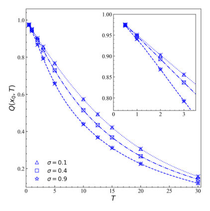
<figcaption class="paper-figure-caption"><b>Fig 1.</b> FIG. 1 Comparison of GTFK and PDE survival probabilities as a function of time to maturity for the Black-Karasinski model, with mean reversion speed k = 0.1, initial rate h0 = 0.05, different values of the volatility, and piecewise constant mean reversion levels of the form explained in the text, with θmin = log(0.05) and θmax = log(0.10) and Nl = 10. Crosses indicate the PDE results. The inset is an enlargement for short times to maturity.</figcaption>
</figure>
</div>

<p><strong>Summary.</strong> This paper introduces a semi-analytical approximation method based on the path-integral formalism for pricing derivatives under stochastic default intensity models. By generalizing the GTFK technique, the authors achieve high accuracy comparable to full numerical solutions while maintaining superior computational efficiency. This makes the method highly practical for applications like XVA calculation in credit risk management.</p>
<p><strong>Why it may be interesting.</strong> While applied to finance, the core mathematical machinery—path integrals, reduced density matrices, and approximating complex dynamics with quadratic forms—shares conceptual parallels with techniques used in quantum field theory or open quantum systems modeling.</p>
<details>
<summary>Detailed structure</summary>
<p><strong>Main problem.</strong> The primary goal is developing an accurate, computationally efficient semi-analytical approximation for pricing derivatives under general default intensity models.</p>
<p><strong>Main result.</strong> The proposed GTFK approximation provides remarkably accurate results for complex models like Black-Karasinski, offering a viable alternative to fully numerical PDE or Monte Carlo schemes.</p>
<p><strong>Method.</strong> The method utilizes the path-integral formalism, employing a specialized approximation (generalizing GTFK) that reduces the action integral by approximating it with a quadratic form around an optimized trial reduced density matrix.</p>
<p><strong>Model / system.</strong> The models are general default intensity processes where the intensity $h_t$ depends on a non-linear diffusion process $X_t$, exemplified by the Black-Karasinski and Hull-White models. These are applied to credit derivatives like Credit Default Swaps (CDS).</p>
<p><strong>Key observables.</strong> Generalized Arrow-Debreu densities ($\psi_\lambda$), European option prices, and CDS spreads (in bps).</p>
<p><strong>Important parameters / regimes.</strong> Volatility ($\sigma$), mean-reversion speed ($k$), time horizons ($T$), and market stress parameters.</p>
<p><strong>Assumptions / limitations.</strong> The approximation assumes the action can be accurately approximated by a quadratic form around an average path $\bar{x}$.</p>
<p><strong>Figures summary.</strong> Table I compares credit spreads using GTFK vs. PDE/EE/KL for BK model; Table III shows spread comparison in Normal vs. Stressed markets; Table IV compares quanto CDS basis using GTFK vs. PDE.</p>
<p><strong>Paper structure.</strong> The paper introduces the problem, develops the path-integral formalism and the GTFK approximation, validates its accuracy by comparing results against known numerical solutions (PDEs) for various models (BK), and applies it to practical pricing problems like quanto CDS.</p>
</details>
<details>
<summary>Abstract</summary>
<p>Using the path-integral formalism, we develop an accurate and easy-to-compute semi-analytical approximation for a general class of {default intensity} models. We illustrate the accuracy of the method by presenting results for the Black-Karasinski model for which the proposed approximation provides remarkably accurate results, even in regimes of high volatility and multi-year time horizons. The accuracy and the computational efficiency of the proposed approximation makes it a viable alternative to fully numerical schemes for a variety of applications in econometrics and derivatives pricing, including the computation of XVA for credit products. As a practical example, we consider the pricing of a quanto Credit Default Swap (CDS) under stochastic intensity of default and an FX devaluation model.</p>
</details>
<p><sub><a href="#top">↑ back to top</a></sub></p>

<p><a id="paper-2606.23325"></a></p>
<h3 id="the-adaptive-nature-of-confirmation-bias"><a href="http://arxiv.org/abs/2606.23325v1">The adaptive nature of confirmation bias</a></h3>
<p><strong>Authors:</strong> Dorje C. Brody, Karl J. Friston, Bernhard K. Meister, Emmanuel M. Pothos<br>
<strong>Type:</strong> theory · <strong>Category:</strong> other · <strong>PDF:</strong> <a href="https://arxiv.org/pdf/2606.23325v1">https://arxiv.org/pdf/2606.23325v1</a><br>
<strong>Analysis basis:</strong> full PDF text, analyzed in chunks
<strong>Topic relevance:</strong> <code>quantum measurements</code> <strong>3/5</strong> · <code>entanglement &amp; information structure</code> <strong>2/5</strong> · <code>measurement-induced transitions</code> <strong>2/5</strong> · <code>Keldysh / 2PI / non-Gaussian methods</code> <strong>1/5</strong> · <code>correlated / nonlocal dissipation</code> <strong>1/5</strong> · <code>driven-dissipative phase transition</code> <strong>1/5</strong> · <code>methods for driven-dissipative</code> <strong>1/5</strong></p>
<div class="figure-strip-hint">↔ Scroll figures horizontally</div>
<div class="paper-figures-scroll">
<figure class="paper-figure-card">
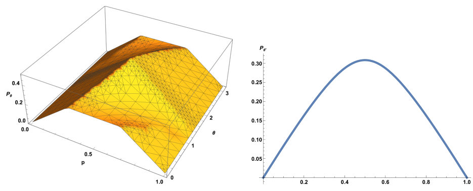
<figcaption class="paper-figure-caption"><b>Fig 1.</b> FIG. 1: Error probability. The error probability Pθ(p) is plotted here on the left panel as a function of the prior p ∈[0, 1] and the evidence choice θ ∈[0, π). The parameters are set at θ1 = 5π/8 and θ2 = 3π/8. For each prior p there is a value θ∗such that the error probability is minimised. For each p, the resulting error probability Pθ∗for the optimal strategy is shown in the right panel.</figcaption>
</figure>
<figure class="paper-figure-card">
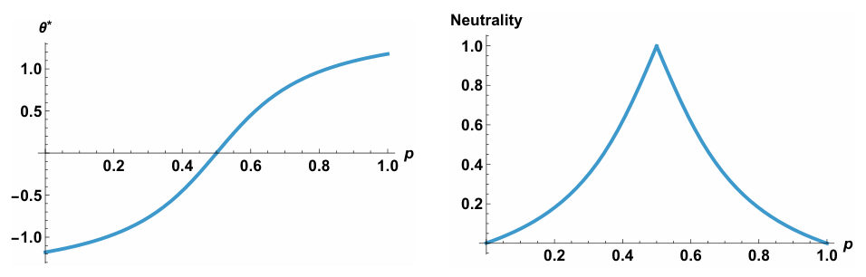
<figcaption class="paper-figure-caption"><b>Fig 2.</b> FIG. 2: Optimal inference and confirmation bias. The optimal inference choice θ∗(p) is plotted in the left panel as a function of the prior p, for the parameters θ1 = 5π/8 and θ2 = 3π/8. Note that θ∗and θ∗± nπ for n = 0, 1, 2, . . . represent identical pieces of evidence, so to avoid a discontinuity in θ∗(p), we have plotted θ∗(p) −π when p &lt; 1/2 and θ∗(p) when p ≥1/2. On the right panel the corresponding degree of neutrality N(p) in evidence seeking is plotted as a function of the prior p. The neutrality is unit normalised such that the value N(p) = 1 represents unbiased query, whereas N(p) = 0 represents a 100% biased search.</figcaption>
</figure>
<figure class="paper-figure-card">
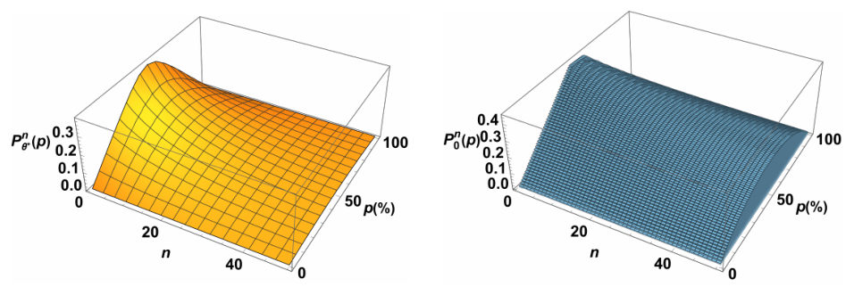
<figcaption class="paper-figure-caption"><b>Fig 3.</b> FIG. 3: Error probabilities with and without confirmation bias. The error probability P (n) θ∗(p) is plotted here in the left panel as a function of the prior p and the sample size n. For each fixed p the error probability decreases exponentially in n. The result is compared in the right panel to the (suboptimal) case where there is no freedom in choosing the evidence, that is, each evidence is modelled by ˆξ(0). The result shows that the error probability decreases very slowly. The parameters are chosen here such that b1(0) = 0.47 and b2(0) = 0.58.</figcaption>
</figure>
<figure class="paper-figure-card">
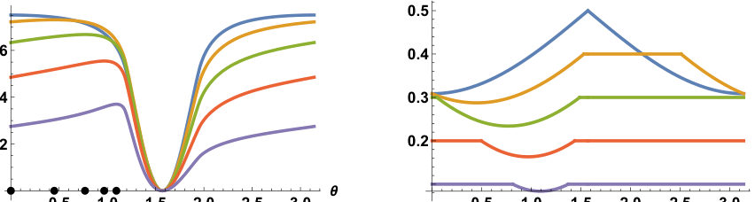
<figcaption class="paper-figure-caption"><b>Fig 4.</b> FIG. 4: Mutual information and error probability. The mutual information associated with the evidence ˆξ(θ) is plotted here on the left panel as a function of θ ∈[0, π) for the priors p = 0.5, 0.6, 0.7, 0.8, 0.9 (from blue to purple). The corresponding values of θ∗(p) are shown by the dots on the horizontal axis. It is evident, for each p, that the mutual information is maximised at the value θ = θ∗(p). The parameters are set at θ2 = 3π/8 and θ1 = 5π/8. The corresponding error probabilities Pθ(p), the minimum of which for each p determines the value of θ∗(p), for the same p-values, are shown on the right panel for comparison.</figcaption>
</figure>
<figure class="paper-figure-card">
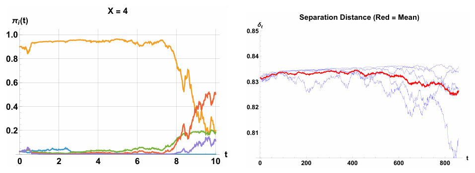
<figcaption class="paper-figure-caption"><b>Fig 5.</b> FIG. 5: A tenacious Bayesian and separation distance. Suppose that there are five alternatives labelled by X = x1, . . . , x5. A Bayesian thinker has the prior view that P(X = x2) = 90%, and that all other alternatives are equally likely with the a prior of 2.5%. Suppose further that a noisy information time series ξt = σXt+ϵt reveals that X = x4 is in fact the correct alternative. Under a Bayesian updating, the view of this decision maker will hardly change for a long time, as illustrated in the left panel (the parameters are set at xk = k and σ = 0.4 — the posterior probability for the event X = x4 is shown in orange, while that for the “correct” event X = x2 is shown in red). Now suppose...</figcaption>
</figure>
</div>

<p><strong>Summary.</strong> This theoretical paper reinterprets confirmation bias not as an irrational flaw but as a rational outcome arising from optimal decision-making under quantum probabilistic constraints. By mapping belief updating onto the geometry of Hilbert space and comparing error minimization with information maximization, it shows that the tendency to favor confirming evidence is mathematically consistent with principles of active inference.</p>
<p><strong>Why it may be interesting.</strong> It bridges fundamental concepts from quantum information theory (non-commuting observables, Hilbert spaces) with cognitive science, suggesting that inherent limitations in measurement or knowledge acquisition can manifest as predictable biases like confirmation bias.</p>
<details>
<summary>Detailed structure</summary>
<p><strong>Main problem.</strong> The paper investigates confirmation bias by formulating belief updating within quantum probability theory, aiming to provide a rational explanation for this cognitive tendency.</p>
<p><strong>Main result.</strong> Optimal evidence selection that minimizes expected error probability naturally leads to an active form of confirmation bias, which is shown to be mathematically equivalent to maximizing information gain (active inference).</p>
<p><strong>Method.</strong> The authors model beliefs using square-root probabilities on a Hilbert space and derive optimal strategies by minimizing spherical distance or expected error probability in binary hypothesis testing.</p>
<p><strong>Model / system.</strong> The framework uses quantum probability rules, modeling evidence selection via matrices ($\hat{\xi}(	heta)$) acting on belief states represented as vectors/density matrices in a Hilbert space. The analysis compares criteria like minimum error vs. maximum mutual information.</p>
<p><strong>Key observables.</strong> Expected error probability ($P_	heta(p)$), Mutual Information ($J$), and the optimal evidence choice ($ heta^*(p)$).</p>
<p><strong>Important parameters / regimes.</strong> Prior probabilities ($p$), bias parameter ($    heta$), sample size ($n$).</p>
<p><strong>Assumptions / limitations.</strong> The analysis assumes that minimizing expected error probability is equivalent to maximizing information gain, and it extends concepts from quantum hypothesis testing to cognitive modeling.</p>
<p><strong>Figures summary.</strong> Figures illustrate the monotonic movement of optimal evidence choice $ heta^*(p)$ with prior belief $p$, showing how minimum error probability decays exponentially with sample size when bias is present.</p>
<p><strong>Paper structure.</strong> The paper progresses by first defining confirmation bias in quantum terms, then deriving the optimal strategy from minimizing error probability, demonstrating its equivalence to active inference, and finally analyzing the benefits of this bias in sequential sampling.</p>
</details>
<details>
<summary>Abstract</summary>
<p>In this paper, the phenomenon generally classified as confirmation bias is formulated on the space of square-root probabilities (or equivalently, using the structures of quantum probability). In this framework, observations are modelled by matrices, rather than random variables on a probability space. In the problem of binary hypothesis testing, an optimal evidence choice minimises the expected error probability. We show that the resulting optimal choice of evidence leads to a confirmation bias, thus revealing a surprising aspect of rationality that encompasses confirmation bias. Specifically, in sequential evidence sampling, the implicit optimality leads to two remarkable evolutionary advantages, namely, (a) the decision maker requires only the smallest memory capacity, and (b) the error probability can be reduced exponentially in sample size. A complementary approach based on the framework of active inference -- where the decision maker seeks evidence that provides maximum information -- is then considered. The resulting optimal evidence is shown to agree with the one obtained by minimising error probability. Our framework provides an easy-to-implement protocol for an active quantum inference, whereby the optimal evidence choice for making an inference is sought over the space of matrices.</p>
</details>
<p><sub><a href="#top">↑ back to top</a></sub></p>

<p><a id="paper-2606.23372"></a></p>
<h3 id="bounding-classical-and-quantum-correlations-in-bayesian-networks-with-quasiprobabilities"><a href="http://arxiv.org/abs/2606.23372v1">Bounding Classical and Quantum Correlations in Bayesian Networks with Quasiprobabilities</a></h3>
<p><strong>Authors:</strong> Paul Becsi, Matty J. Hoban<br>
<strong>Type:</strong> theory · <strong>Category:</strong> other · <strong>PDF:</strong> <a href="https://arxiv.org/pdf/2606.23372v1">https://arxiv.org/pdf/2606.23372v1</a><br>
<strong>Analysis basis:</strong> full PDF text, analyzed in chunks
<strong>Topic relevance:</strong> <code>entanglement &amp; information structure</code> <strong>3/5</strong> · <code>Keldysh / 2PI / non-Gaussian methods</code> <strong>1/5</strong> · <code>analog quantum simulation</code> <strong>1/5</strong> · <code>correlated / nonlocal dissipation</code> <strong>1/5</strong> · <code>driven-dissipative phase transition</code> <strong>1/5</strong> · <code>methods for driven-dissipative</code> <strong>1/5</strong> · <code>non-equilibrium dynamics</code> <strong>1/5</strong> · <code>non-equilibrium universality</code> <strong>1/5</strong></p>
<div class="figure-strip-hint">↔ Scroll figures horizontally</div>
<div class="paper-figures-scroll">
<figure class="paper-figure-card">
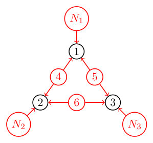
<figcaption class="paper-figure-caption"><b>Fig 1.</b> Figure 2: Introducing noise variables, illustrated on the Triangle Scenario.</figcaption>
</figure>
<figure class="paper-figure-card">
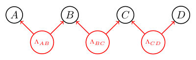
<figcaption class="paper-figure-caption"><b>Fig 2.</b> Figure 3: The correspondence between the 4-on-line Scenario and its underlying undirected graph. Edges become latent variables with the same domain size as the corresponding index.</figcaption>
</figure>
</div>

<p><strong>Summary.</strong> This paper develops a sophisticated mathematical framework to characterize correlation sets in Bayesian Networks by introducing 'quasiprobabilities.' It aims to prove that these quasi-sets collapse onto the Nested Markov Model for many graph structures. This work provides deep insights into the boundary between classical, quantum, and generalized causal correlations.</p>
<p><strong>Why it may be interesting.</strong> While not directly about AMO Hamiltonians, the rigorous mathematical framework developed for bounding correlations in graphical models has deep connections to quantum information theory and causality, which are foundational concepts when analyzing open quantum systems or entanglement structure.</p>
<details>
<summary>Detailed structure</summary>
<p><strong>Main problem.</strong> The core problem is understanding the mathematical bounds on correlations (classical vs. quantum) within Bayesian Networks, especially when unobserved or latent variables are present.</p>
<p><strong>Main result.</strong> The authors conjecture and show evidence that the 'quasi set' of correlations derived by allowing quasiprobabilities recovers the Nested Markov Model for tree-structured scenarios.</p>
<p><strong>Method.</strong> The work employs abstract mathematical tools like tensor network decompositions, algebraic constraints (Verma constraints), and generalizing concepts from Bell non-locality to graph structures.</p>
<p><strong>Model / system.</strong> The model is a Directed Acyclic Graph (DAG) representing causal dependencies between observed variables ($V$) and unobserved latent variables ($L$). The analysis uses 'quasiprobabilities' to relax standard probability constraints.</p>
<p><strong>Key observables.</strong> Correlations over observed nodes, factorization properties of distributions, and the relationship between different sets: Classical $C(G)$, Quantum $Q(G)$, Quasi Set $\mathcal{W}(G)$, Nested Markov Model $N(G)$.</p>
<p><strong>Important parameters / regimes.</strong> The structure of the graph $G$, the number of variables $|V|$, and the rank/bond dimensions associated with tensor decompositions.</p>
<p><strong>Assumptions / limitations.</strong> The analysis assumes working with finite discrete variables, and key results often rely on proving equivalence between different formal definitions (e.g., quasilatents vs. quasiresponses).</p>
<p><strong>Figures summary.</strong> Figures illustrate specific correlation scenarios like the bipartite Bell Scenario ($B_2$), the Triangle Scenario, and the Common Ancestor Scenario, showing how correlations are structured or violated.</p>
<p><strong>Paper structure.</strong> The paper progresses by defining quasiprobabilistic models, establishing equivalences between different mathematical descriptions of these sets ($\mathcal{W}_l = \mathcal{W}_r = \mathcal{W}_n$), proving inclusions ($C(G) \subseteq Q(G) \subseteq \dots \subseteq N(G)$), and finally using tensor network techniques to prove the equivalence $\mathcal{W}(G) = M(G) = N(G)$ for specific graph classes.</p>
</details>
<details>
<summary>Abstract</summary>
<p>Bell's theorem reveals that quantum theory is in tension with classical causal reasoning and, in particular, the notion of local causality. This is now understood as a particular example of non-classicality in the study of correlations in (Bayesian) networks with both unobserved and observed nodes: the correlations are probability distributions over the observed nodes. There is a great deal of work aiming to understand the bounds on quantum and classical correlations in such networks and one approach is to consider outer approximations to the former. Along these lines, we consider quasiprobabilistic models for Bayesian networks, which can be seen as classical models but the probability distributions involving unobserved nodes are "replaced" with quasiprobabilities that respect normalisation but not positivity. We denote the set of correlations resulting from these models as the quasi set. Such models have a history in the study of Bell-type non-classicality where it has been shown that they can produce all non-signalling correlations. We show a generalisation of this result for a broad class of networks, which motivates a conjecture that the quasi set recovers the so called nested Markov model. Our work utilises a connection to tensor network decompositions, which may be of independent interest.</p>
</details>
<p><sub><a href="#top">↑ back to top</a></sub></p>

<p><a id="paper-2606.21692"></a></p>
<h3 id="continuous-variable-model-for-arbitrary-image-propagation-via-dirac-comb-expansion-in-four-wave-mixing"><a href="http://arxiv.org/abs/2606.21692v1">Continuous-variable model for arbitrary image propagation via Dirac-comb expansion in Four-Wave Mixing</a></h3>
<p><strong>Authors:</strong> Fabián Ramírez-Pacheco, Andrea Basilio-Zárate, Hans Marin Florez, Pablo Solano, Carla Hermann-Avigliano<br>
<strong>Type:</strong> theory · <strong>Category:</strong> other · <strong>PDF:</strong> <a href="https://arxiv.org/pdf/2606.21692v1">https://arxiv.org/pdf/2606.21692v1</a><br>
<strong>Analysis basis:</strong> full PDF text, analyzed in chunks
<strong>Topic relevance:</strong> <code>interference shaping light</code> <strong>3/5</strong> · <code>Keldysh / 2PI / non-Gaussian methods</code> <strong>2/5</strong> · <code>correlated / nonlocal dissipation</code> <strong>1/5</strong> · <code>driven-dissipative phase transition</code> <strong>1/5</strong> · <code>entanglement &amp; information structure</code> <strong>1/5</strong> · <code>methods for driven-dissipative</code> <strong>1/5</strong> · <code>non-equilibrium dynamics</code> <strong>1/5</strong></p>
<div class="figure-strip-hint">↔ Scroll figures horizontally</div>
<div class="paper-figures-scroll">
<figure class="paper-figure-card">
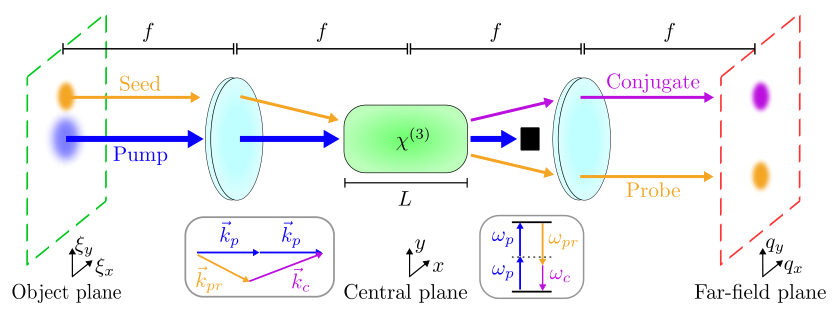
<figcaption class="paper-figure-caption"><b>Fig 1.</b> FIG. 1. Setup for the propagation of arbitrary images in 4WM. An input image is imprinted on the pump and/or seed beams in the object plane defined by the axes (ξx, ξy). A Fourier-imaging lens maps the image to the center of the χ(3) medium, where the 4WM interaction takes place. The second lens propagates the generated probe and conjugate beams to a far-field detection plane defined by the axes (qx, qy), where their intensities and cross-covariances are measured. The boxed insets illustrate energy conservation and the phase-matching condition.</figcaption>
</figure>
<figure class="paper-figure-card">
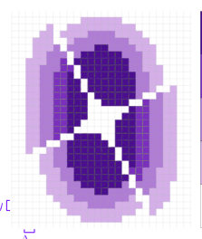
<figcaption class="paper-figure-caption"><b>Fig 2.</b> FIG. 2. Illustration of the field’s Dirac-comb expansion at the center of the medium, using the Amazing Quantum logo as an example.</figcaption>
</figure>
<figure class="paper-figure-card">
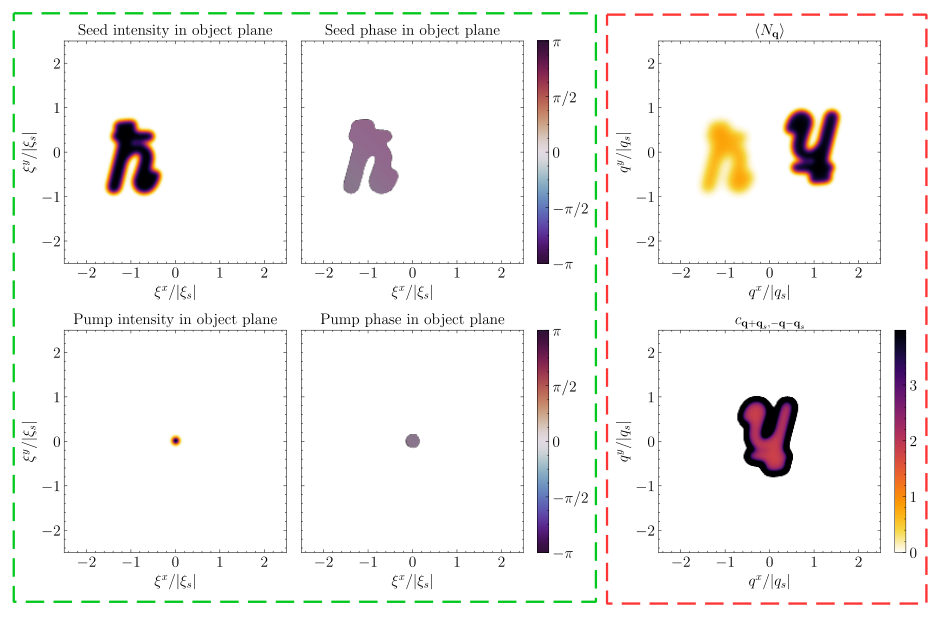
<figcaption class="paper-figure-caption"><b>Fig 3.</b> FIG. 3. Intensity and phase profiles of the seed and pump fields in the (ξx, ξy) object plane. The right column shows the intensity and normalized correlations in the (qx, qy) far-field plane. The ℏsymbol is imprinted in the object plane of the seed and mapped to its Fourier components at the center of the medium. The pump profile was Gaussian and spatially larger than the seed at the same plane, with a seed-to-pump width ratio δ = 0.38. The ℏpattern appears in the far-field intensities ⟨ˆ Nq⟩ of both the probe (right) and conjugate (left). The normalized correlation is evaluated at diametrically opposed momenta qpr = q + qs = −qc and also exhibits the ℏshape; all of its values exceed...</figcaption>
</figure>
<figure class="paper-figure-card">
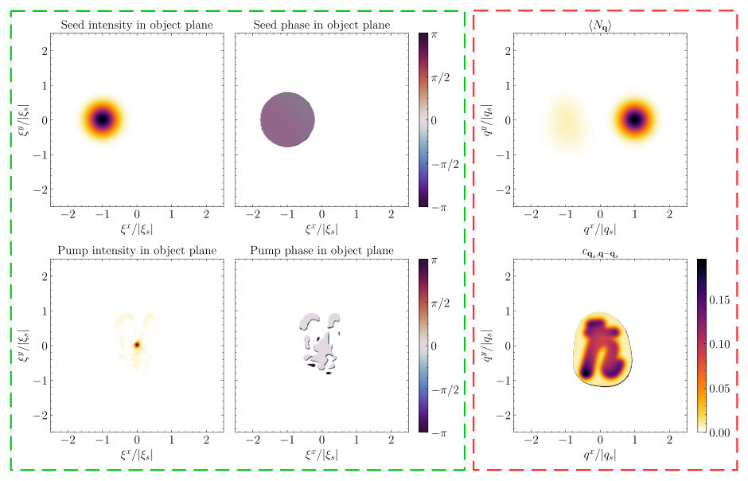
<figcaption class="paper-figure-caption"><b>Fig 4.</b> FIG. 4. Covariance imaging. In the object plane, the seed is spatially Gaussian, and the pump has the shape required to reproduce the ℏsymbol in the cross-correlation in the low-gain regime, with seed-to-pump width ratio δ = 0.21. The probe and conjugate intensities (right and left Gaussian profiles, respectively) preserve the Gaussian structure of the seed. The normalized correlation, evaluated at qpr = qs and qc = q−qs, reproduces the imprinted ℏpattern. All values of the normalized correlation remain below unity, so the Cauchy–Schwarz inequality is not violated by this configuration; this does not by itself establish classicality, which would require additional witnesses.</figcaption>
</figure>
<figure class="paper-figure-card">
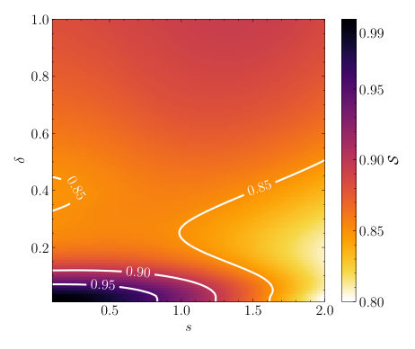
<figcaption class="paper-figure-caption"><b>Fig 5.</b> FIG. 5. Image similarity S between the computed cross- correlation and the target ℏpattern, as a function of the seed- to-pump width ratio δ and the interaction strength s.</figcaption>
</figure>
</div>

<p><strong>Summary.</strong> This paper presents a comprehensive continuous-variable model for Four-Wave Mixing that calculates quantum correlations (variance and covariance) across arbitrary transverse beam profiles using a Dirac-comb expansion. The theory successfully unifies descriptions of image transfer, showing how information can be encoded in either the measured intensities or non-locally in the spatial cross-correlations. It is significant for its all-order treatment of structured light fields in nonlinear quantum optics.</p>
<p><strong>Why it may be interesting.</strong> This work is highly relevant for quantum optics and open quantum systems because it provides an all-order, spatially resolved theoretical framework to analyze complex nonlinear processes like 4WM. It moves beyond simple plane-wave assumptions to model structured light fields.</p>
<details>
<summary>Detailed structure</summary>
<p><strong>Main problem.</strong> The paper develops a unified theoretical model for characterizing the transverse spatial statistics of quantum-correlated bright twin beams generated via Four-Wave Mixing (4WM). It aims to provide closed-form expressions for mean intensity, variance, and covariance valid for arbitrary pump/seed profiles.</p>
<p><strong>Main result.</strong> The formalism successfully extends known results from plane-wave approximations to include complex spatial structuring, demonstrating how information can be encoded in either the bright intensities or non-locally in the spatial cross-correlations via the covariance measurement.</p>
<p><strong>Method.</strong> The core method involves using a Dirac-comb expansion of the pump field within a continuous-variable framework. This allows for calculating quantum correlation functions (variance and covariance) to all orders in the nonlinear interaction strength.</p>
<p><strong>Model / system.</strong> The physical system is stimulated Four-Wave Mixing (4WM) occurring in an alkali-atom vapor ($\chi^{(3)}$ nonlinearity). The model uses bosonic operators and treats the pump field via a Dirac-comb expansion, enabling pixel-by-pixel computation of quantum statistics.</p>
<p><strong>Key observables.</strong> Mean intensity, variance ($\langle\Delta^2 \hat{N}
angle$), cross-covariance ($    ext{Cov}(\dots)$), and Intensity-Difference Squeezing (IDS).</p>
<p><strong>Important parameters / regimes.</strong> Seed-to-pump waist ratio ($\delta$) and interaction strength ($s$). The regime of high fidelity is characterized by $\delta \ll 1$ and $s \lesssim 1$.</p>
<p><strong>Assumptions / limitations.</strong> The analysis relies on approximations when summing infinite series (e.g., using $\cosh/\sinh$ forms) and assumes the validity of certain limits, such as small coupling parameters or small waist ratios ($\delta \ll 1$).</p>
<p><strong>Figures summary.</strong> Figures illustrate the setup for image propagation via Fourier imaging detection, the Dirac-comb expansion structure, and plots showing the achievable Image Similarity Score ($S$) versus $(\delta, s)$ space.</p>
<p><strong>Paper structure.</strong> The paper builds from deriving the general continuous-variable model using the Dirac-comb expansion to calculate observables like variance and covariance. It validates this by recovering known plane-wave results before demonstrating image transfer capabilities in both intensity (seed imaging) and cross-correlation (covariance imaging).</p>
</details>
<details>
<summary>Abstract</summary>
<p>We develop a macroscopic continuous-variable model of stimulated four-wave mixing (4WM) yielding closed-form expressions for the mean intensity, variance, and covariance of bright probe and conjugate beams, valid for arbitrary transverse profiles of the pump and seed to all orders in the nonlinear interaction strength. The model uses a Dirac-comb expansion of the pump field, making the photon statistics computable pixel-by-pixel from one set of expressions. In the plane-wave limit, we recover the phase-insensitive amplifier results. Beyond this limit, the formalism explicitly demonstrates the spatial routing of information observed in earlier experiments: the seed angular spectrum is transferred to the twin-beam intensities, whereas the angular spectrum of the squared pump field is transferred to the spatial cross-correlation between the probe and conjugate. We characterize the parameter window of high-fidelity image transfer in the covariance, which is controlled by the seed-to-pump waist ratio and the interaction strength. Our model provides, in one analytical framework, a theoretical account of experiments encoding information in the bright intensities or non-locally in the spatial cross-correlations.</p>
</details>
<p><sub><a href="#top">↑ back to top</a></sub></p>

<p><a id="paper-2606.22641"></a></p>
<h3 id="generalization-of-catability-for-parity-less-cat-states"><a href="http://arxiv.org/abs/2606.22641v1">Generalization of catability for parity-less cat states</a></h3>
<p><strong>Authors:</strong> Michal Matulík, Jan Provazník, Petr Marek, Šimon Bräuer<br>
<strong>Type:</strong> theory · <strong>Category:</strong> quantum information and computing · <strong>PDF:</strong> <a href="https://arxiv.org/pdf/2606.22641v1">https://arxiv.org/pdf/2606.22641v1</a><br>
<strong>Analysis basis:</strong> full PDF text, analyzed in chunks
<strong>Topic relevance:</strong> <code>interference shaping light</code> <strong>3/5</strong> · <code>quantum measurements</code> <strong>2/5</strong> · <code>analog quantum simulation</code> <strong>1/5</strong> · <code>correlated / nonlocal dissipation</code> <strong>1/5</strong> · <code>correlated cavity matter</code> <strong>1/5</strong> · <code>driven-dissipative phase transition</code> <strong>1/5</strong> · <code>entanglement &amp; information structure</code> <strong>1/5</strong></p>
<div class="figure-strip-hint">↔ Scroll figures horizontally</div>
<div class="paper-figures-scroll">
<figure class="paper-figure-card">
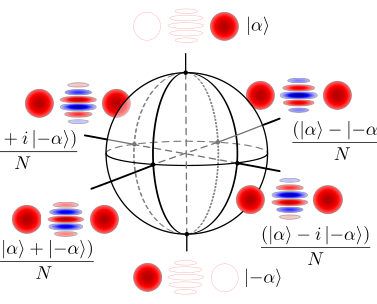
<figcaption class="paper-figure-caption"><b>Fig 1.</b> FIG. 1. Illustration of a Bloch sphere with logical qubits formed by superpositions of coherent states. Its poles correspond to the individual coherent components |𝛼⟩and |−𝛼⟩, while the equal-weight coherent-state superpositions lie on the equator. In the notation of (1), the conventional even and odd parity cats occupy opposite equatorial points, while the Kerr cat states occupy the orthogonal equatorial points. The Wigner functions surrounding the sphere illustrate the corresponding base states.</figcaption>
</figure>
<figure class="paper-figure-card">
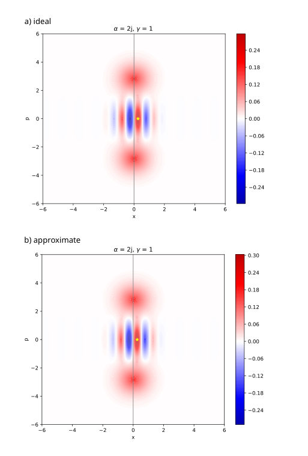
<figcaption class="paper-figure-caption"><b>Fig 2.</b> FIG. 2. Comparison of the ideal Kerr cat state (a) and its approxi- mation (b) obtained as the ground state (20) for 𝛼= 2𝑖, 𝛽≈±0.185 and 𝛾= 1, 𝑠= 1. The yellow star denotes the value of 𝛽 √</figcaption>
</figure>
<figure class="paper-figure-card">
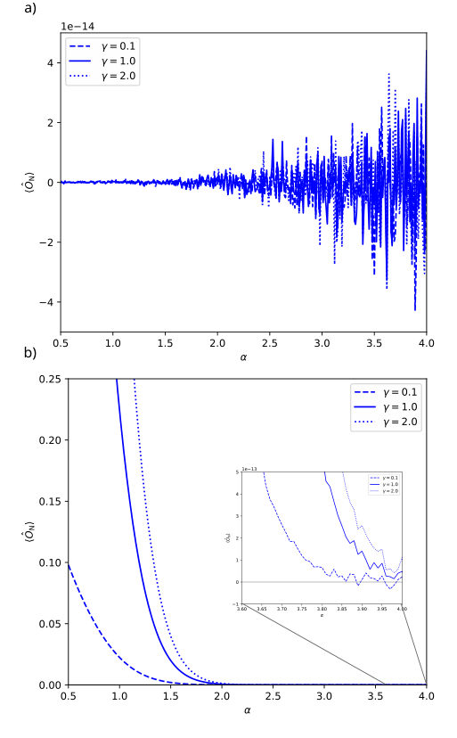
<figcaption class="paper-figure-caption"><b>Fig 3.</b> FIG. 4. The expectation value (31) of the improved nullifier (30) obtained for ideal Kerr cat states with varying amplitude 𝛼and with their (a) positive and (b) negative fringes displaced. The dotted, solid, and dashed curves represent distinct 𝛾∈{0.1, 1.0, 2.0} choices.</figcaption>
</figure>
<figure class="paper-figure-card">
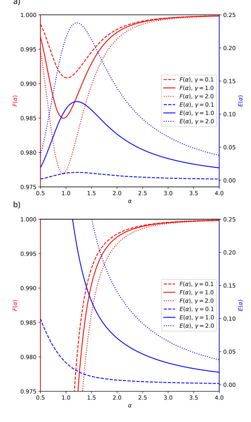
<figcaption class="paper-figure-caption"><b>Fig 4.</b> FIG. 3. The plots show the quantifiers (24) and (25) as functions of the amplitude 𝛼for displaced positive (a) and negative (b) fringes, as described in (21) and (22). Fidelity, with vertical axis on the left, is shown in red, whereas blue portrays the expectation value of the nullifier with axis on the right. Dotted, solid, and dashed curves correspond to individual choices of 𝛾∈{0.1, 1.0, 2.0}.</figcaption>
</figure>
<figure class="paper-figure-card">
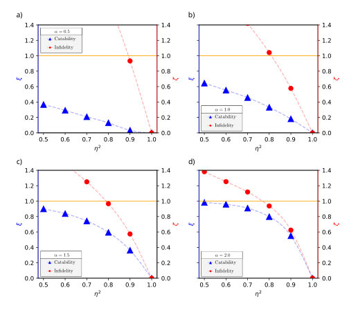
<figcaption class="paper-figure-caption"><b>Fig 5.</b> FIG. 5. Resilience global generalized catability 𝜉(blue) and fidelity 𝜁 (red) against loss, expressed in terms of intensity transmittance 𝜂2. Each panel depicts a different amplitude 𝛼∈{0.5, 1.0, 1.5, 2.0}. The presented results were obtained numerically on a truncated Fock basis with dimension 𝑁= 70.</figcaption>
</figure>
</div>

<p><strong>Summary.</strong> The paper generalizes the concept of 'catability' to characterize Kerr cat states, which lack simple parity symmetries. By replacing the standard parity check with a measurable displaced-parity operator within an extended nullifier framework, the authors provide a robust and experimentally practical method for verifying these complex quantum superpositions using only photon-number measurements.</p>
<p><strong>Why it may be interesting.</strong> This work provides a powerful, experimentally viable diagnostic tool (catability) that extends beyond simple symmetry checks (like parity), making it highly relevant for characterizing complex quantum states generated in photonic systems or cavity QED setups.</p>
<details>
<summary>Detailed structure</summary>
<p><strong>Main problem.</strong> The research aims to extend the concept of 'catability'—a quantifier for characterizing quantum cat states based on their interference structure—from standard parity-defined coherent cat states to more complex, parity-less Kerr cat states.</p>
<p><strong>Main result.</strong> A generalized and experimentally practical framework is established using a displaced-parity operator that allows catability to be evaluated solely from photon-number measurements, proving robust against optical loss compared to fidelity methods.</p>
<p><strong>Method.</strong> The core method involves modifying the original nullifier by replacing the parity component with a measurable displaced-parity operator, allowing for the characterization of Kerr cat states via expectation values derived from this generalized nullifier.</p>
<p><strong>Model / system.</strong> The study focuses on coherent and Kerr cat states, which are superpositions of coherent states $|\alpha
angle$ and $|-\alpha
angle$. The analysis uses annihilation ($\hat{a}$) and creation ($\hat{a}^\dagger$) operators within the framework of quantum optics.</p>
<p><strong>Key observables.</strong> Catability ($\xi$), Wigner function ($W(x)$), Fidelity ($F(\alpha)$), Expectation Value $E(\alpha)$, and expectation values involving the displaced-parity operator $\langle \hat{\Pi}(eta) 
angle$.</p>
<p><strong>Important parameters / regimes.</strong> The amplitude $\alpha$, displacement parameter $eta$, and a structural parameter $\gamma$ are key. The analysis also considers loss parameters ($\eta^2$).</p>
<p><strong>Assumptions / limitations.</strong> The generalized nullifier operator is generally approximate, meaning the minimal eigenvalue may not be exactly zero; however, it provides an experimentally measurable proxy for ideal state characterization.</p>
<p><strong>Figures summary.</strong> Figures compare Wigner functions of ideal vs. approximate Kerr cat states and plot various metrics (Fidelity, Expectation Value) against amplitude $\alpha$, demonstrating the method's quantitative accuracy.</p>
<p><strong>Paper structure.</strong> The paper builds by first identifying the limitation of parity for Kerr cats, then generalizing the nullifier using a displaced-parity operator, followed by numerical benchmarking comparing catability against fidelity and assessing resilience to optical loss.</p>
</details>
<details>
<summary>Abstract</summary>
<p>We extend the nullifier-based certification framework of catability from parity-defined coherent cat states to parity-less Kerr cat states. Since Kerr cats cannot be distinguished by parity alone, we replace the parity component of the original nullifier with a displaced-parity operator that captures their characteristic interference structure. The resulting generalized catability remains directly observable and can be evaluated from a finite number of photon-number measurements without full state tomography. Numerical benchmarks show that the method faithfully certifies Kerr-cat features, produces accurate approximations of ideal Kerr cat states, and is more resilient to optical loss than fidelity-based certification. We also identify an exact anti-linear nullifier based on complex conjugation, providing an ideal algebraic description of Kerr cat states. Our results broaden the scope of catability and provide an experimentally practical approach to the characterization of Kerr cat states.</p>
</details>
<p><sub><a href="#top">↑ back to top</a></sub></p>

<p><a id="paper-2606.22448"></a></p>
<h3 id="kinetics-of-template-directed-multistate-copolymerization"><a href="http://arxiv.org/abs/2606.22448v1">Kinetics of template-directed multistate copolymerization</a></h3>
<p><strong>Authors:</strong> Pierre Gaspard<br>
<strong>Type:</strong> theory · <strong>Category:</strong> statistical mechanics · <strong>PDF:</strong> <a href="https://arxiv.org/pdf/2606.22448v1">https://arxiv.org/pdf/2606.22448v1</a><br>
<strong>Analysis basis:</strong> full PDF text, analyzed in chunks
<strong>Topic relevance:</strong> <code>methods for driven-dissipative</code> <strong>3/5</strong> · <code>non-equilibrium dynamics</code> <strong>2/5</strong> · <code>non-equilibrium universality</code> <strong>2/5</strong> · <code>Keldysh / 2PI / non-Gaussian methods</code> <strong>1/5</strong> · <code>correlated / nonlocal dissipation</code> <strong>1/5</strong> · <code>driven-dissipative phase transition</code> <strong>1/5</strong></p>
<div class="figure-strip-hint">↔ Scroll figures horizontally</div>
<div class="paper-figures-scroll">
<figure class="paper-figure-card">

<figcaption class="paper-figure-caption"><b>Fig 1.</b> FIG. 1: Exponent α of the exponential decrease of the stationary length distribution pst(l) versus equal monomer concentrations c1 = c2. The dots depict the numerical results of Gillespie’s algorithm and the solid line the theoretical predictions from Eq. (48) and tr Ψl = ψ1 l + ψ2 l ∼exp(−αl). The dots are obtained from the length distributions pst(l) shown in the inset. These distributions are computed in the stationary regime by simulating a long random trajectory l(t) with Nstep = 107 steps of Gillespie’s algorithm and counting how often the length is found at some value l during the simulation of the trajectory. The template is a Bernoulli sequence of probabilities ν(1) = ν(2) = 0.5.</figcaption>
</figure>
<figure class="paper-figure-card">

<figcaption class="paper-figure-caption"><b>Fig 2.</b> FIG. 2: The mean growth velocity and the mean fractions ¯µ(1) and ¯µ(2) of monomeric units in the grown copy versus equal monomer concentrations c1 = c2, showing how these quantities behave in the transition between the stationary and growth regimes. The template is a Bernoulli sequence of probabilities ν(1) = ν(2) = 0.5 and length L = 104. The symbols are the numerical results of Gillespie’s algorithm with Nstat = 104 and the solid lines the theoretical predictions of the iterative method with Nloop = 102.</figcaption>
</figure>
<figure class="paper-figure-card">

<figcaption class="paper-figure-caption"><b>Fig 3.</b> FIG. 3: The mean growth velocity and the mean fractions ¯µ(1) and ¯µ(2) of monomeric units in the grown copy versus the monomer concentration c1 for the fixed value c2 = 5 of the other monomer concentration. The template is a Bernoulli sequence of probabilities ν(1) = ν(2) = 0.5 and length L = 103. The symbols are the numerical results of Gillespie’s algorithm with Nstat = 104 and the solid lines the theoretical predictions of the iterative method with Nloop = 102.</figcaption>
</figure>
<figure class="paper-figure-card">

<figcaption class="paper-figure-caption"><b>Fig 4.</b> Figure 3 presents the same quantities as in Fig. 2, but now as a function of the concentration c1 of monomers of type m = 1 for a fixed value of the other concentration c2 = 5. As the concentration c1 decreases to zero, the fraction ¯µ(1) of the corresponding monomeric unit m = 1 in the copy also becomes equal to zero, while ¯µ(2) = 1 −¯µ(1) reaches the unit value. In the limit c1 = 0, the copy sequence is thus exclusively composed of units m = 2, as expected. Again, we observe the good agreement between the numerical results of Gillespie’s algorithm (depicted with dots) and the theoretical predictions of the iterative method (the solid lines).</figcaption>
</figure>
<figure class="paper-figure-card">

<figcaption class="paper-figure-caption"><b>Fig 5.</b> FIG. 4: The local probabilities µ(m; l) of monomeric units m = 1 and m = 2 (upper panel) and the mean local dwell times τl (lower panel) versus the location l along the template sequence shown above the panels, for the monomer concentrations c1 = c2 = 5. The template is a Bernoulli sequence of probabilities ν(1) = ν(2) = 0.5 and length L = 103. The numerical results of Gillespie’s algorithm with Nstat = 109 are depicted as open symbols (open circles and open squares for the local monomeric probabilities, open diamonds for the mean local dwell times) and the theoretical predictions of the iterative method with Nloop = 102 as crosses and pluses for the local monomeric probabilities and filled...</figcaption>
</figure>
</div>

<p><strong>Summary.</strong> This work develops a rigorous kinetic theory for template-directed copolymerization by molecular machines. It solves the underlying master equations exactly in the long-time limit using an efficient Iterated Matrix Function System (IMFS). The methodology allows precise calculation of growth velocity and sequence statistics across various physical regimes, providing a powerful tool for analyzing constrained stochastic processes.</p>
<p><strong>Why it may be interesting.</strong> While focused on biochemistry kinetics, the mathematical machinery—solving complex linear systems using iterative matrix methods in the long-time limit—is highly relevant to non-equilibrium statistical mechanics problems involving constrained dynamics or reaction fronts.</p>
<details>
<summary>Detailed structure</summary>
<p><strong>Main problem.</strong> The study focuses on deriving the exact kinetics for template-directed multistate copolymerization processes, such as those occurring in polymerases or ribosomes.</p>
<p><strong>Main result.</strong> The authors developed an efficient Iterated Matrix Function System (IMFS) approach that provides the exact asymptotic solution for mean growth velocity and sequence probabilities, significantly faster than direct numerical simulation.</p>
<p><strong>Method.</strong> The core method involves solving coupled linear Master Equations by transforming them into a matrix form, utilizing a matrix factorization ansatz to derive nested equations solvable via backward and forward matrix iterations.</p>
<p><strong>Model / system.</strong> The system models monomer incorporation into a growing chain directed by a template, where the molecular machine can occupy multiple conformational or activation states. The dynamics are governed by Markov jump processes involving attachment, detachment, and internal state transitions.</p>
<p><strong>Key observables.</strong> Mean growth velocity ($v$), sequence probabilities ($\mu(	ext{sequence}; l)$), local monomeric unit probabilities ($\mu(m; l)$), and mean local dwell times ($  au_l$).</p>
<p><strong>Important parameters / regimes.</strong> Monomer concentrations ($c_1, c_2$), template length ($L$), and the ratio of attachment to detachment rates which define different growth regimes (stationary vs. steady).</p>
<p><strong>Assumptions / limitations.</strong> The process is modeled as a Markov jump process; rate constants are assumed independent of previously incorporated units; asymptotic analysis relies on solving the system in the long-time limit ($t 	o \infty$).</p>
<p><strong>Figures summary.</strong> Figures illustrate the transition between stationary (exponential decay) and steady growth regimes, showing how mean growth velocity and monomer fractions depend critically on monomer concentrations.</p>
<p><strong>Paper structure.</strong> The paper builds from defining the master equations for the multistate process to deriving a matrix formulation. It then introduces the factorization property leading to nested equations solved via backward/forward iterations (IMFS). Finally, it calculates key observables like $v$ and analyzes different growth regimes.</p>
</details>
<details>
<summary>Abstract</summary>
<p>We consider processes of template-directed multistate copolymerization by molecular machines such as polymerases or ribosomes, having multiple states of conformation or activation. We show that the kinetic equations of these processes can be exactly solved for the mean growth velocity, the sequence probabilities of the grown copy, and the local probabilities and fractions of monomeric units in the copy. Asymptotically, in the long-time limit, the kinetic equations are solved with a matrix factorization ansatz in terms of a backward iteration, forming an iterated matrix function system, and a complementary forward iteration, both running along the template sequence. The iterative method is very significantly faster than usual computational methods, as demonstrated with a numerical example.</p>
</details>
<p><sub><a href="#top">↑ back to top</a></sub></p>

<p><a id="paper-2606.21962"></a></p>
<h3 id="quantum-error-suppression-via-symmetry-averaged-virtual-distillation"><a href="http://arxiv.org/abs/2606.21962v1">Quantum Error Suppression via Symmetry-Averaged Virtual Distillation</a></h3>
<p><strong>Authors:</strong> Canyu He, Chunhua Zeng, Ruyu Yang, Yongdan Yang<br>
<strong>Type:</strong> theory · <strong>Category:</strong> quantum information and computing · <strong>PDF:</strong> <a href="https://arxiv.org/pdf/2606.21962v1">https://arxiv.org/pdf/2606.21962v1</a><br>
<strong>Analysis basis:</strong> full PDF text, analyzed in chunks
<strong>Topic relevance:</strong> <code>methods for driven-dissipative</code> <strong>3/5</strong> · <code>analog quantum simulation</code> <strong>2/5</strong> · <code>Keldysh / 2PI / non-Gaussian methods</code> <strong>1/5</strong> · <code>correlated / nonlocal dissipation</code> <strong>1/5</strong> · <code>driven-dissipative phase transition</code> <strong>1/5</strong> · <code>entanglement &amp; information structure</code> <strong>1/5</strong> · <code>non-equilibrium dynamics</code> <strong>1/5</strong></p>
<div class="figure-strip-hint">↔ Scroll figures horizontally</div>
<div class="paper-figures-scroll">
<figure class="paper-figure-card">

<figcaption class="paper-figure-caption"><b>Fig 1.</b> FIG. 1. Conceptual workflow of SAVD. The imperfect output ρA of a quantum task can be decomposed into a ideal target state ρ0 and an residual state σ induced by errors. The target- error coupling term C can be cancelled by group orthogonality mentioned in Appendix A. Based on the symmetry of the quantum system, we construct a set of symmetry operators {si} satisfying siρ0s† i = ρ0. By applying these operators to the state ρA, we obtain the symmetry-averaged state ¯ρA. The desirable component can then be effectively distilled from it.</figcaption>
</figure>
<figure class="paper-figure-card">

<figcaption class="paper-figure-caption"><b>Fig 2.</b> FIG. 2. Multi-copy measurement circuit for SAVD, illus- trated for M = 3. Each copy is drawn independently from the symmetry-averaged ensemble. A cyclic-permutation mea- surement, or an equivalent Hadamard-test implementation, gives access to Tr(O¯ρM A ), while setting O = I gives Tr(¯ρM A ). Their ratio yields the SAVD estimator.</figcaption>
</figure>
<figure class="paper-figure-card">

<figcaption class="paper-figure-caption"><b>Fig 3.</b> FIG. 4. Real-time dynamics of the four-qubit spin-isotropic Heisenberg chain. The observable is O = Y1Y4, and the Trotter step size is τ = 0.025. The noisy Trotter data use two-qubit depolarizing noise with error probability 5 × 10−4. Green line: exact dynamics; red circles: raw noiseless Trot- ter dynamics; red squares: raw noisy Trotter dynamics; blue triangles: SAVD with M = 3 and Nsym = 1000 sampled sym- metry branches.</figcaption>
</figure>
<figure class="paper-figure-card">

<figcaption class="paper-figure-caption"><b>Fig 4.</b> Figure 4 compares the exact dynamics, raw Trotter- ized dynamics, noisy Trotterized dynamics, and SAVD- mitigated dynamics. The noiseless Trotter curve devi- ates from the exact reference as the evolution time in- creases, reflecting the accumulation of coherent product- formula error. The inclusion of two-qubit depolarizing noise further distorts the observable dynamics, showing the coexistence of algorithmic and hardware-induced er- rors in the simulated output state. After applying SAVD, the observable follows the exact curve more closely over the simulated time window. This demonstrates that the same symmetry-preconditioned VD mechanism used in the VQE example can also suppress...</figcaption>
</figure>
</div>

<p><strong>Summary.</strong> This paper introduces Symmetry-Averaged Virtual Distillation (SAVD), an advanced error suppression technique designed to handle both algorithmic and hardware noise in quantum simulations. By first averaging the state over symmetry operations, SAVD preconditions the input for standard Virtual Distillation. This approach has been shown to improve accuracy significantly when simulating models like the Heisenberg chain.</p>
<p><strong>Why it may be interesting.</strong> The methodology provides a general, symmetry-based architecture for enhancing quantum simulation fidelity by treating multiple error sources within a single density matrix framework.</p>
<details>
<summary>Detailed structure</summary>
<p><strong>Main problem.</strong> Reliable quantum simulation is hampered by the simultaneous presence of algorithmic approximations and hardware noise, which existing error suppression methods fail to address cohesively.</p>
<p><strong>Main result.</strong> The proposed Symmetry-Averaged Virtual Distillation (SAVD) protocol successfully suppresses errors arising from both coherent algorithmic imperfections and stochastic hardware noise simultaneously.</p>
<p><strong>Method.</strong> It combines symmetry averaging—which constructs a symmetry-invariant ensemble by averaging over symmetry operations—as a preconditioning step before applying standard Virtual Distillation to amplify the desired spectral component.</p>
<p><strong>Model / system.</strong> The methods are analyzed using general quantum tasks, specifically applied to Variational Ground-State Estimation (VQE) and Trotterized Real-Time Dynamics simulations on an isotropic Heisenberg chain model.</p>
<p><strong>Key observables.</strong> Ground-state energy $E(	heta)$ for VQE; Expectation value of observables $\langle O(t) 
angle$ for dynamics.</p>
<p><strong>Important parameters / regimes.</strong> The resource cost depends on the number of symmetry samples ($N_{	ext{sym}}$) and the Virtual Distillation copy number ($M$).</p>
<p><strong>Assumptions / limitations.</strong> The protocol relies on approximating the full group average with a finite sample average, and its effectiveness hinges on the target state remaining spectrally dominant after averaging.</p>
<p><strong>Figures summary.</strong> Figure 1 illustrates the conceptual workflow of decomposing an imperfect state into a target and residual component for symmetry averaging. Figure 2 shows the multi-copy measurement circuit required for the SAVD estimator.</p>
<p><strong>Paper structure.</strong> The paper first introduces the limitations of current error suppression, then details the SAVD protocol by combining symmetry averaging ($ar{
ho}_A$) with Virtual Distillation (VD). It applies this framework to VQE and dynamics simulations on a Heisenberg chain, concluding with an analysis of the resource trade-off between $N_{	ext{sym}}$ and $M$.</p>
</details>
<details>
<summary>Abstract</summary>
<p>Reliable quantum simulation is limited by both algorithmic approximations and hardware noise, which usually coexist in the output of near-term and early fault-tolerant quantum devices. Existing error-suppression strategies often target these error sources separately. Here, we introduce symmetry-averaged virtual distillation (SAVD), an error-suppression protocol that applies symmetry averaging before virtual distillation and treats both imperfections at the density-matrix level. The protocol constructs a symmetry-averaged output ensemble from symmetry-labeled implementations, leaving the symmetry-invariant target contribution unchanged while averaging residual components over symmetry-related branches. Virtual distillation (VD) is then applied to this averaged ensemble, rather than to the raw output state, to amplify its dominant eigencomponent. We analyze the resulting spectral suppression mechanism and identify the role of symmetry averaging as a state-preconditioning layer for VD. Numerical demonstrations on an isotropic Heisenberg chain show improved accuracy in the presence of both coherent algorithmic errors and hardware noise. Our results provide a general symmetry-based architecture for enhancing quantum simulations.</p>
</details>
<p><sub><a href="#top">↑ back to top</a></sub></p>

<p><a id="paper-2606.23644"></a></p>
<h3 id="fundamental-limits-of-stability-inference-in-high-dimensional-complex-systems"><a href="http://arxiv.org/abs/2606.23644v1">Fundamental Limits of Stability Inference in High-Dimensional Complex Systems</a></h3>
<p><strong>Authors:</strong> Michela Costa, Kentaro Hoshisashi, Flaviano Morone, Tim Rogers, Paolo Barucca<br>
<strong>Type:</strong> both · <strong>Category:</strong> disordered systems and neural networks · <strong>PDF:</strong> <a href="https://arxiv.org/pdf/2606.23644v1">https://arxiv.org/pdf/2606.23644v1</a><br>
<strong>Analysis basis:</strong> full PDF text, analyzed in chunks
<strong>Topic relevance:</strong> <code>non-equilibrium universality</code> <strong>3/5</strong> · <code>non-equilibrium dynamics</code> <strong>2/5</strong> · <code>Keldysh / 2PI / non-Gaussian methods</code> <strong>1/5</strong> · <code>correlated / nonlocal dissipation</code> <strong>1/5</strong> · <code>driven-dissipative phase transition</code> <strong>1/5</strong> · <code>methods for driven-dissipative</code> <strong>1/5</strong></p>
<div class="figure-strip-hint">↔ Scroll figures horizontally</div>
<div class="paper-figures-scroll">
<figure class="paper-figure-card">

<figcaption class="paper-figure-caption"><b>Fig 1.</b> Fig. 1 Eigenvalue spectra and condition numbers for the GOE (rows 1–2) and Ginibre (rows 3–4) ensembles, each with N = 100, q = 10, ∆t = 1, nA = 30 independent realisations, and nsim = 30 trajectories per realisation. For each ensemble, the left column shows the true spectrum, the center column the estimated spectrum, and the right column the condition number as a function of c. Row 1 (GOE, drift matrix): true spectrum of A, plug-in estimator ˆA, and condition numbers κ(A) and κ( ˆA). Row 2 (GOE, Fisher information): true Fisher matrix I, plug-in estimator ˆI, and their condition numbers. Rows 3–4 repeat the same comparisons for the Ginibre ensemble; spectra show the real part of the...</figcaption>
</figure>
<figure class="paper-figure-card">

<figcaption class="paper-figure-caption"><b>Fig 2.</b> Fig. 2 Relative uncertainty of the soft mode as a function of the distance to instability r = λmin(A). The relaxation rate is estimated by projecting the inferred propagator ˆQ onto the true soft eigenvector u∗. Black circles show Monte Carlo results; the red dashed curve corresponds to the Wishart prediction κW and the blue dash-dotted curve to the compound-Wishart approximation κcW. The compound- Wishart correction provides a better approximation to the empirical uncertainty than the naive Wishart bound, consistently capturing the growth of σr/r as criticality is approached. The projection isolates the soft mode and removes the order-statistic fluctuations associated with λmin( ˆ A).</figcaption>
</figure>
<figure class="paper-figure-card">

<figcaption class="paper-figure-caption"><b>Fig 3.</b> Fig. 3 Stability inference and resolution phase diagrams for the GOE ensemble (N = 100, κcW inflation factor, Tracy–Widom finite-size correction). Each panel shows the relative uncertainty σr/r as a function of two system or experimental parameters, with the remaining parameter fixed. Top row (stability diagnosis boundary, σr/r = 1): regions above the boundary (red overlay) correspond to a false-instability probability Pfalse ≥Φ(−1) ≈16%, i.e. the data are insufficient to reliably determine the sign of r. Bottom row (resolution boundary, σr/r = 0.1): regions above the boundary indicate that r cannot be estimated with better than 10% relative precision; below it, the distance to instability...</figcaption>
</figure>
<figure class="paper-figure-card">

<figcaption class="paper-figure-caption"><b>Fig 4.</b> Fig. 4 Estimated distance to instability ˆr · ∆t across sliding windows for the EEG and financial datasets. Top: EEG recording from a representative patient. Each point corresponds to a sliding window estimate; the red dashed line marks seizure onset. In the pre-ictal phase ˆr · ∆t exhibits large fluctuations, suggesting that the system repeatedly approaches and retreats from the stability boundary before eventually crossing it. At seizure onset the inferred distance drops sharply and remains suppressed throughout the post-ictal phase, consistent with a transient approach to instability during the ictal event. Bottom: Financial volatility panel (N = 47 equities, ∆t = 1 s) across the ten...</figcaption>
</figure>
<figure class="paper-figure-card">

<figcaption class="paper-figure-caption"><b>Fig 5.</b> Fig. 5 Resolvability phase diagram for three empirical datasets, overlaid on the GOE boundary. Each dashed curve is the dataset-specific resolvability boundary q∗(c) defined by σr/r = 1, computed using the system-specific parameters (N, ∆t); points above the curve are resolvable. The financial volatility series (red, N = 47, ∆t = 1 s) lies well above its boundary with σr/r = 0.04, indicating precise resolution of the distance to instability. The intracranial EEG (blue, N = 47, ∆t = 1/512 s) sits close to its boundary with σr/r = 0.37: the stability can be diagnosed but the precise value of r is poorly resolved. The plankton series (green, N = 47, ∆t = 1/3 d) falls below its boundary with...</figcaption>
</figure>
</div>

<p><strong>Summary.</strong> This paper establishes fundamental theoretical limits on how precisely we can measure a system's proximity to an instability threshold using limited data. It shows that this precision degrades severely as criticality is approached due to increased temporal correlations, leading to potential inference failure even with abundant raw data. The methodology applies these rigorous statistical bounds to diverse systems like neural circuits and financial markets.</p>
<p><strong>Why it may be interesting.</strong> The work provides rigorous quantitative bounds on the information content extractable from noisy time series near phase transitions, which is highly relevant for understanding critical dynamics in complex physical systems beyond standard equilibrium statistical mechanics.</p>
<details>
<summary>Detailed structure</summary>
<p><strong>Main problem.</strong> The core problem is determining the fundamental, achievable precision for estimating how close a complex system is to an instability threshold using finite, noisy time-series data.</p>
<p><strong>Main result.</strong> The uncertainty in estimating this distance diverges as the system approaches criticality ($r 	o 0$), and inference can fail entirely if temporal correlations reduce the effective number of independent observations below the system dimension.</p>
<p><strong>Method.</strong> The analysis uses statistical inference techniques (MLE, Bayesian) applied to models based on the multivariate Ornstein-Uhlenbeck process. Key diagnostics involve calculating the Fisher information matrix and accounting for sample correlation via an 'effective sample size'.</p>
<p><strong>Model / system.</strong> The system is modeled using a linear, stationary framework, specifically the multivariate Ornstein-Uhlenbeck (OU) process, which describes relaxation near a fixed point. Applications include analyzing financial volatility, plankton abundance, and intracranial EEG recordings.</p>
<p><strong>Key observables.</strong> Relative uncertainty on the estimated distance to criticality ($\sigma_r/r$), effective sample size ($M_{	ext{eff}}$), and the dimensionless product $r\Delta t = \lambda_{\min}(\hat{\mathbf{A}}) \Delta t$.</p>
<p><strong>Important parameters / regimes.</strong> Distance to criticality ($r$), system dimension ($N$), number of samples ($M$), and sampling interval ($\Delta t$). The critical threshold is defined by $\sigma_r/r=0.1$ for high resolution.</p>
<p><strong>Assumptions / limitations.</strong> The analysis often relies on the linear, stationary OU description, which breaks down near true criticality where relaxation times diverge; approximations like Gaussianity are also used.</p>
<p><strong>Figures summary.</strong> Figures illustrate eigenvalue spectra and condition numbers ($\kappa$) as coupling strength increases toward critical points. Phase diagrams map out boundaries for stable diagnosis versus quantitative resolution based on sample size and sampling rate.</p>
<p><strong>Paper structure.</strong> The paper develops the theoretical framework by analyzing the estimation precision using Fisher information, derives necessary corrections (like $M_{	ext{eff}}$), establishes multiple diagnostic thresholds ($\sigma_r/r=1$ vs $\sigma_r/r=0.1$), and validates these limits across diverse empirical datasets.</p>
</details>
<details>
<summary>Abstract</summary>
<p>Many complex systems, including ecosystems, neural circuits, and financial markets, are inferred to operate close to a threshold of instability, at which a small perturbation can propagate across the entire system. This proximity is often interpreted as functionally advantageous, yet it poses a question common to all these fields: from a finite, noisy recording, how precisely can the distance of a system from that threshold be estimated? Using the multivariate Ornstein-Uhlenbeck process as the canonical linear model of relaxation near a stable fixed point, we show that the attainable precision is governed by three factors: an effective measurement budget, set by the number of samples relative to the system dimension and the sampling interval; the signal-to-noise ratio, given by the magnitude of deterministic interactions relative to stochastic forcing; and the distance to criticality, which simultaneously sets the system's correlation times and degrades both of the preceding factors. As the slowest dynamical mode softens near the threshold, the curvature of the log-likelihood flattens along the direction that determines stability, so that the relative uncertainty on the estimated distance diverges as that distance vanishes. Critically, temporal correlations near instability reduce the effective number of independent observations far below the nominal sample count, and inference breaks down when this effective count falls below the system dimension, even when the raw data volume appears sufficient.   A direct consequence is the existence of an optimal sampling interval that diverges as the system approaches criticality, with practical implications for experimental design.</p>
</details>
<p><sub><a href="#top">↑ back to top</a></sub></p>

<p><a id="paper-2606.21721"></a></p>
<h3 id="on-a-central-limit-theorem-and-sanovs-principle-for-quantum-neural-networks"><a href="http://arxiv.org/abs/2606.21721v1">On a Central Limit Theorem and Sanov's principle for quantum neural networks</a></h3>
<p><strong>Authors:</strong> Anderson Melchor Hernandez<br>
<strong>Type:</strong> theory · <strong>Category:</strong> disordered systems and neural networks · <strong>PDF:</strong> <a href="https://arxiv.org/pdf/2606.21721v1">https://arxiv.org/pdf/2606.21721v1</a><br>
<strong>Analysis basis:</strong> full PDF text, analyzed in chunks
<strong>Topic relevance:</strong> <code>methods for driven-dissipative</code> <strong>3/5</strong> · <code>non-equilibrium dynamics</code> <strong>2/5</strong> · <code>non-equilibrium universality</code> <strong>2/5</strong> · <code>Keldysh / 2PI / non-Gaussian methods</code> <strong>1/5</strong> · <code>driven-dissipative phase transition</code> <strong>1/5</strong></p>
<div class="figure-strip-hint">↔ Scroll figures horizontally</div>
<div class="paper-figures-scroll">
<figure class="paper-figure-card">

<figcaption class="paper-figure-caption"><b>Fig 1.</b> Low-resolution page preview, page 2</figcaption>
</figure>
<figure class="paper-figure-card">

<figcaption class="paper-figure-caption"><b>Fig 2.</b> Low-resolution page preview, page 3</figcaption>
</figure>
<figure class="paper-figure-card">

<figcaption class="paper-figure-caption"><b>Fig 3.</b> Low-resolution page preview, page 4</figcaption>
</figure>
<figure class="paper-figure-card">

<figcaption class="paper-figure-caption"><b>Fig 4.</b> Low-resolution page preview, page 5</figcaption>
</figure>
<figure class="paper-figure-card">

<figcaption class="paper-figure-caption"><b>Fig 5.</b> Low-resolution page preview, page 6</figcaption>
</figure>
</div>

<p><strong>Summary.</strong> This paper provides a deep theoretical analysis of the statistical mechanics governing Quantum Neural Networks trained via gradient flow. It proves that the system's fluctuations obey a Central Limit Theorem, allowing for the precise characterization of how the ensemble average converges to a deterministic limit function. This work establishes rigorous mathematical foundations for using mean-field approximations in quantum machine learning models.</p>
<p><strong>Why it may be interesting.</strong> The rigorous mathematical tools developed—CLT and LDP for complex, high-dimensional stochastic systems like QNNs—provide powerful techniques applicable to analyzing non-equilibrium dynamics in quantum many-body systems or open quantum systems where mean-field approximations are used.</p>
<details>
<summary>Detailed structure</summary>
<p><strong>Main problem.</strong> The work studies the asymptotic fluctuations of a Mixture of Experts (MoE) generated by a quantum neural network (QNN) trained via gradient flow.</p>
<p><strong>Main result.</strong> It establishes both a Central Limit Theorem (CLT) and Sanov's principle for the MoE, showing that the fluctuation process converges to a solution of a linear transport equation.</p>
<p><strong>Method.</strong> The analysis employs mean-field limits, large deviation theory, and functional analysis on Sobolev spaces to characterize the convergence rates of empirical measures.</p>
<p><strong>Model / system.</strong> The system is a Quantum Neural Network (QNN) modeled as an MoE of $N$ experts trained using gradient flow minimizing a quadratic loss function. The dynamics are governed by continuity equations for the empirical measure $\mu_{\Theta_N}^t$.</p>
<p><strong>Key observables.</strong> Fluctuation processes ($\delta_N^t$, $\psi_{Npt, x_q}$), the empirical measure $\mu_{\Theta_N}^t$, and the limit function $f_t$ solving a kernel-based evolution equation.</p>
<p><strong>Important parameters / regimes.</strong> The number of experts ($N 	o \infty$), time ($t$), and the dimension of the parameter space ($d$).</p>
<p><strong>Assumptions / limitations.</strong> The analysis assumes training via gradient flow minimizing a quadratic cost function, and relies on establishing weak compactness in appropriate Sobolev spaces.</p>
<p><strong>Paper structure.</strong> The paper progresses by first defining the mean-field limit ($\mu_t$) and then rigorously analyzing the fluctuations around this limit. Key steps involve applying CLT to show $\delta_N^t$ converges to a deterministic process, followed by establishing large deviation principles for the empirical measures.</p>
</details>
<details>
<summary>Abstract</summary>
<p>In this work, we study the fluctuations of a Mixture of Experts (MoE) generated by a quantum neural network trained via gradient flow on supervised learning problems. Our main results establish the Central Limit Theorem (CLT), and Sanov's principle for an MoE as the number of experts diverges. We demonstrate that the fluctuations of the empirical measure of its parameters close to its corresponding limit probability measure solve a linear transport equation. As a byproduct, we show that the MoE converges to a limit function which solves an evolution equation governed by the neural tangent kernel associated with the quantum neural network.</p>
</details>
<p><sub><a href="#top">↑ back to top</a></sub></p>

<p><a id="paper-2606.22170"></a></p>
<h3 id="stableshots-online-shot-stopping-for-quantum-circuit-execution"><a href="http://arxiv.org/abs/2606.22170v1">StableShots: Online Shot Stopping for Quantum Circuit Execution</a></h3>
<p><strong>Authors:</strong> Giuseppe Bisicchia, Alessandro Bocci, Ernesto Pimentel, Antonio Brogi<br>
<strong>Type:</strong> experiment · <strong>Category:</strong> quantum information and computing · <strong>PDF:</strong> <a href="https://arxiv.org/pdf/2606.22170v1">https://arxiv.org/pdf/2606.22170v1</a><br>
<strong>Analysis basis:</strong> full PDF text, analyzed in chunks
<strong>Topic relevance:</strong> <code>quantum measurements</code> <strong>3/5</strong> · <code>QC/QI experiment</code> <strong>2/5</strong> · <code>measurement-induced transitions</code> <strong>2/5</strong> · <code>driven-dissipative phase transition</code> <strong>1/5</strong> · <code>methods for driven-dissipative</code> <strong>1/5</strong></p>
<div class="figure-strip-hint">↔ Scroll figures horizontally</div>
<div class="paper-figures-scroll">
<figure class="paper-figure-card">

<figcaption class="paper-figure-caption"><b>Fig 1.</b> Low-resolution page preview, page 2</figcaption>
</figure>
<figure class="paper-figure-card">

<figcaption class="paper-figure-caption"><b>Fig 2.</b> Low-resolution page preview, page 3</figcaption>
</figure>
<figure class="paper-figure-card">

<figcaption class="paper-figure-caption"><b>Fig 3.</b> Low-resolution page preview, page 4</figcaption>
</figure>
</div>

<p><strong>Summary.</strong> This paper introduces StableShots, an adaptive online stopping rule designed to optimize shot usage during quantum circuit execution. By monitoring the Total Variation Distance between empirical measurements, it determines when enough shots have been collected to achieve a desired fidelity threshold without wasting resources. This method significantly improves the cost-fidelity trade-off compared to using fixed measurement budgets.</p>
<p><strong>Why it may be interesting.</strong> While focused on resource optimization rather than fundamental physics, the concept of using statistical convergence criteria (like TVD) to dynamically manage computational resources is relevant for developing robust algorithms in open quantum systems where measurement noise dictates feasibility.</p>
<details>
<summary>Detailed structure</summary>
<p><strong>Main problem.</strong> Traditional quantum circuit execution relies on fixed shot budgets, which is inefficient as low budgets under-sample results while high budgets waste resources.</p>
<p><strong>Main result.</strong> The proposed online stopping rule, StableShots, achieves the target fidelity ($    ext{TVD} \le 0.05$) with a median shot count (7,650) that significantly outperforms fixed-shot baselines on held-out test evaluations.</p>
<p><strong>Method.</strong> StableShots is a black-box online stopping rule that executes circuits in small batches and monitors the Total Variation Distance ($    ext{TVD}$) between cumulative empirical distributions to determine when local stability is reached.</p>
<p><strong>Model / system.</strong> The method is tested on quantum circuits executed on noisy IBM simulated backends, evaluated across 180 QSimBench traces spanning various qubit counts (4 to 14).</p>
<p><strong>Key observables.</strong> Total Variation Distance ($    ext{TVD}$), median/mean shot count required for stability.</p>
<p><strong>Important parameters / regimes.</strong> The stopping criterion involves monitoring $    ext{TVD} \le \epsilon$ over $k$ consecutive checks, using small batch sizes ($b$).</p>
<p><strong>Assumptions / limitations.</strong> STABLESHOTS provides a local signal of diminishing returns rather than a formal guarantee of final fidelity; the comparison uses finite-shot reference distributions.</p>
<p><strong>Figures summary.</strong> Table I compares STABLESHOTS performance against fixed-shot baselines across various metrics (shots, TVD thresholds), showing superior cost-fidelity trade-offs.</p>
<p><strong>Paper structure.</strong> The paper introduces the problem of static shot budgeting, details the StableShots online stopping rule based on monitoring $  ext{TVD}$, and validates its efficacy through extensive testing against fixed budgets on simulated noisy quantum hardware.</p>
</details>
<details>
<summary>Abstract</summary>
<p>Quantum circuit execution estimates output distributions by repeated measurements, yet developers commonly choose a fixed shot budget before execution. This static choice is brittle: low budgets can under-sample the distribution, while high budgets waste measurements. In this paper, we present StableShots, a black-box online stopping rule for static quantum circuits. The method executes a fixed circuit in small batches, monitors the total-variation distance between cumulative empirical distributions, and stops after repeated evidence of local stability. We evaluate StableShots on 180 QSimBench traces spanning six circuit families, six sizes from 4 to 14 qubits, and five noisy IBM simulated backends. With validation-only calibration and 100 repeated backend-holdout splits, the selected configuration reaches TVD &lt;= 0.05 on all held-out test evaluations with median 7,650 shots, whereas fixed-shot baselines either fail more often or spend substantially more shots.</p>
</details>
<p><sub><a href="#top">↑ back to top</a></sub></p>

<p><a id="paper-2606.22067"></a></p>
<h3 id="detector-grade-germanium-as-a-low-disorder-host-for-indium-acceptor-spin-qubits-a-five-qubit-materials-to-architecture-design-study"><a href="http://arxiv.org/abs/2606.22067v1">Detector-Grade Germanium as a Low-Disorder Host for Indium-Acceptor Spin Qubits: A Five-Qubit Materials-to-Architecture Design Study</a></h3>
<p><strong>Authors:</strong> D. -M. Mei, K. -M. Dong, S. A. Panamaldeniya, N. Budhathoki, S. Chhetri, A. Prem, S. Bhattarai<br>
<strong>Type:</strong> theory · <strong>Category:</strong> quantum information and computing · <strong>PDF:</strong> <a href="https://arxiv.org/pdf/2606.22067v1">https://arxiv.org/pdf/2606.22067v1</a><br>
<strong>Analysis basis:</strong> full PDF text, analyzed in chunks
<strong>Topic relevance:</strong> <code>spintronics-quantum-optics interface</code> <strong>3/5</strong> · <code>QC/QI experiment</code> <strong>2/5</strong> · <code>Kondo &amp; dissipative impurity</code> <strong>1/5</strong> · <code>analog quantum simulation</code> <strong>1/5</strong> · <code>exotic spin models in light-matter</code> <strong>1/5</strong></p>
<div class="figure-strip-hint">↔ Scroll figures horizontally</div>
<div class="paper-figures-scroll">
<figure class="paper-figure-card">

<figcaption class="paper-figure-caption"><b>Fig 1.</b> Figure 1: Conceptual design of a five-qubit indium-acceptor platform in detector-grade Ge. (a) Top- view architecture of a one-dimensional qubit chain formed by five mapped In acceptor sites, labeled Q1–Q5, embedded in a detector-grade Ge channel. The labels Q1–Q5 represent one successfully mapped post-fabrication realization of the statistical acceptor distribution, not predetermined implantation sites. A shallow surface gate stack provides local plunger/control gates (P1–P5) and barrier gates (B12, B23, B34, B45) that are biased after mapping to tune the local electrostatic environment and inter-qubit coupling. In a practical device, additional outer barrier or reservoir- coupling gates...</figcaption>
</figure>
<figure class="paper-figure-card">

<figcaption class="paper-figure-caption"><b>Fig 2.</b> Figure 2: Schematic physics of an In acceptor qubit in Ge. In bulk, the acceptor-bound hole inherits the fourfold Γ8 valence-band manifold. Near an interface or under an applied electric field, this manifold splits into two Kramers doublets. The lowest doublet forms the qubit basis, while the excited doublet enables electric-dipole-mediated control through spin–orbit-induced mixing.</figcaption>
</figure>
<figure class="paper-figure-card">

<figcaption class="paper-figure-caption"><b>Fig 3.</b> Figure 3: Multiscale modeling workflow for the proposed five-qubit In-acceptor platform in detector- grade Ge. The figure plots the logical data flow used in the design study: detector-grade materials in- puts and a statistically generated In-acceptor layout feed electrostatic gate modeling, strain/disorder analysis, and single-acceptor Hamiltonian extraction; these outputs are then used to compute Stark tunability, qubit-frequency spread, pairwise dipolar/exchange-assisted coupling, and chain-level dynamical behavior. The optional phononic-crystal cavity branch plots how an engineered acoustic bandgap or defect mode modifies the local phonon density of states, the phonon-limited relaxation...</figcaption>
</figure>
<figure class="paper-figure-card">

<figcaption class="paper-figure-caption"><b>Fig 4.</b> Figure 4: Conceptual summary of the proposed five-qubit In-acceptor platform in detector-grade Ge. (a) A 1 µm-scale detector-grade Ge channel contains a statistically selected In-acceptor register, Q1–Q5, controlled by local plunger and barrier gates and read out through a nearby RF charge sensor. The labels denote one mapped post-fabrication realization, not predetermined implantation sites. (b) Functional modules of the architecture: statistical register selection, electrical control, coupling control, spin-to-charge readout, and optional PnC-enabled phonon filtering or selected cavity-mediated coupling.</figcaption>
</figure>
</div>

<p><strong>Summary.</strong> The paper proposes using Indium acceptors in ultra-pure Germanium to create an array of hole-spin qubits. It details how detector-grade material suppresses environmental noise while the engineered acceptor spacing allows for electrical control and coupling mechanisms. This establishes a robust, intermediate architecture for scaling quantum processors.</p>
<p><strong>Why it may be interesting.</strong> This work is highly relevant as it tackles the material science interface of solid-state quantum computing, proposing a specific, chemically defined impurity platform that bridges established donor/electron systems with fully lithographically defined gate structures.</p>
<details>
<summary>Detailed structure</summary>
<p><strong>Main problem.</strong> Developing a scalable, manufacturable hardware architecture for semiconductor quantum information processing using acceptor-bound hole spins in Germanium (Ge).</p>
<p><strong>Main result.</strong> Detector-grade Ge with controlled Indium doping provides a credible intermediate platform for hole-spin qubits, offering all-electrical control and manageable disorder.</p>
<p><strong>Method.</strong> The study uses a theory-guided design approach combining materials science predictions (impurity levels) with device architecture engineering (Phononic Crystal integration).</p>
<p><strong>Model / system.</strong> The system is an array of acceptor-bound hole spins in Ge, where the qubit basis derives from the spin-orbit active valence band manifold. The Hamiltonian incorporates terms for electric field control and inter-acceptor coupling.</p>
<p><strong>Key observables.</strong> Spin coherence time ($T_2$), electrical tunability (via EDSR), nearest-neighbor coupling strength ($J_{i,i+1}$), and the ratio $\Lambda_{1D} = J_{i,i+1} / \delta\omega_{idle}$.</p>
<p><strong>Important parameters / regimes.</strong> Target In density ($\sim 2 	imes 10^{14} 	ext{ cm}^{-3}$), characteristic acceptor spacing ($\sim 170 	ext{ nm}$), and background impurity level ($\sim 10^{10} 	ext{ cm}^{-3}$).</p>
<p><strong>Assumptions / limitations.</strong> The primary assumptions involve the ability to suppress bulk electrostatic/strain disorder using detector-grade material, and that PnC engineering can successfully manage unwanted acoustic phonon modes.</p>
<p><strong>Figures summary.</strong> Conceptual layouts illustrate a one-dimensional five-qubit chain embedded in Ge, showing local gate structures for electrical control and cross-sections detailing the integration of Phononic Crystal cavities for environmental management.</p>
<p><strong>Paper structure.</strong> The paper progresses from identifying the physical limitations (disorder) to proposing a materials solution ($ ext{In}$ doping in detector-grade $ ext{Ge}$), establishing the fundamental physics (Hamiltonian, coupling mechanisms), and finally detailing a staged, multi-component architecture including Phononic Crystal enhancement for scalability.</p>
</details>
<details>
<summary>Abstract</summary>
<p>Acceptor-bound hole spins in germanium (Ge) offer a promising but underexplored route to semiconductor quantum information processing. We present a theory-guided design study of a detector-grade Ge acceptor-spin platform based on intentionally incorporated indium (In) acceptors in ultra-high-purity Ge. The proposed materials strategy combines a residual impurity background near $10^{10} \mathrm{cm^{-3}}$ with a target In density of approximately $2\times10^{14} \mathrm{cm^{-3}}$, corresponding to an acceptor spacing of about 170 nanometer. A 1 $μ$m-long active channel with a suitable transverse mode volume can contain about five acceptors on average, enabling a statistically selected post-fabrication register rather than a deterministically placed chain. We analyze the physical basis, device architecture, strain and disorder limits, coupling hierarchy, modeling workflow, fabrication pathway, and scaling prospects. Our results indicate that detector-grade Ge can suppress uncontrolled bulk electrostatic and strain disorder to levels compatible with acceptor-hole qubits, while the spin--orbit-active valence-band manifold supports all-electrical control and dipolar or phonon-mediated coupling. Direct exchange is treated as a close-pair or gate-enhanced interaction rather than the generic mean-spacing coupling. Phononic crystal engineering is identified as a second-stage enhancement for suppressing unwanted acoustic modes and enabling selected cavity-mediated interactions after baseline control, readout, and nearest-neighbor coupling are validated. Remaining challenges include statistical acceptor placement, interface disorder, charge noise, readout integration, and experimental validation. This work identifies detector-grade Ge In-acceptor qubits as a credible intermediate architecture between donor-based impurity qubits and fully gate-defined Ge hole-spin hardware.</p>
</details>
<p><sub><a href="#top">↑ back to top</a></sub></p>

<p><a id="paper-2606.23647"></a></p>
<h3 id="genuine-certification-of-incompatible-quantum-instruments-through-sequential-communication-tasks"><a href="http://arxiv.org/abs/2606.23647v1">Genuine certification of incompatible quantum instruments through sequential communication tasks</a></h3>
<p><strong>Authors:</strong> Arindam Mitra, Satyaki Manna, Debashis Saha<br>
<strong>Type:</strong> theory · <strong>Category:</strong> quantum information and computing · <strong>PDF:</strong> <a href="https://arxiv.org/pdf/2606.23647v1">https://arxiv.org/pdf/2606.23647v1</a><br>
<strong>Analysis basis:</strong> full PDF text, analyzed in chunks
<strong>Topic relevance:</strong> <code>quantum measurements</code> <strong>3/5</strong> · <code>entanglement &amp; information structure</code> <strong>2/5</strong> · <code>measurement-induced transitions</code> <strong>2/5</strong> · <code>Keldysh / 2PI / non-Gaussian methods</code> <strong>1/5</strong></p>
<div class="figure-strip-hint">↔ Scroll figures horizontally</div>
<div class="paper-figures-scroll">
<figure class="paper-figure-card">

<figcaption class="paper-figure-caption"><b>Fig 1.</b> FIG. 1. Fig. (a) depicts the scenario of instrument incompatibility certification that we explore in this work. The scenarios depicted Fig. (b) and Fig. (c) are the scenarios of measurement and channel incompatibility certification scenarios respectively and are the special cases of the scenario depicted in Fig. (a) which is unified.</figcaption>
</figure>
<figure class="paper-figure-card">

<figcaption class="paper-figure-caption"><b>Fig 2.</b> FIG. 2. The instrument J0 induces a channel Ψ0 and a measurement M0. Similarly, the instrument J1 induces channel Ψ1 and measurement M1. All induced measurements and channels are pairwise compatible. But Jo and J1 are incompatible. Therefore, any certification protocol that is able to certify the incompatibility of J0 and J1, does not depend on the incompatibility of induced measurements and channels and therefore, it is genuine.</figcaption>
</figure>
</div>

<p><strong>Summary.</strong> The paper introduces a novel method to certify that two quantum instruments are incompatible by designing a specific three-party sequential communication task. By showing that the maximum achievable performance in this task exceeds the classical limit, they prove the nonclassical nature (incompatibility) of the instruments. This establishes instrument incompatibility as an operational resource for quantum advantage.</p>
<p><strong>Why it may be interesting.</strong> This work provides a powerful, general framework to detect fundamental nonclassical features (like instrument incompatibility) using communication protocols, which is highly relevant for understanding the limits of quantum information processing.</p>
<details>
<summary>Detailed structure</summary>
<p><strong>Main problem.</strong> To establish an operational method for certifying the incompatibility of quantum instruments, which is a fundamental manifestation of nonclassicality in quantum theory.</p>
<p><strong>Main result.</strong> The authors developed a genuine certification protocol using sequential communication tasks where violating a classical bound proves that the implemented quantum instruments are incompatible. This demonstrates instrument incompatibility as a source of quantum advantage in communication.</p>
<p><strong>Method.</strong> They analyze a three-party sequential communication task, comparing the achievable 'figure of merit' for quantum vs. classically constrained strategies to derive necessary bounds for compatibility.</p>
<p><strong>Model / system.</strong> The model involves three parties (sender, relayer, receiver) and focuses on quantum instruments, which generalize measurements and channels. The core diagnostic tool is a figure of merit derived from conditional probabilities in the communication task.</p>
<p><strong>Key observables.</strong> Figure of merit ($S$), comparing $S_{Q}^{	ext{op}}$ (quantum optimum), $S_{QC}^{	ext{op}}$ (compatible quantum optimum), and $S_{C}^{	ext{op}}$ (classical optimum).</p>
<p><strong>Important parameters / regimes.</strong> The task is generalized using $(m_A, d)$-sequential XOR tasks; specific results are derived for the $(2, 2)$ case.</p>
<p><strong>Assumptions / limitations.</strong> The protocol's genuineness relies on it not depending on the pairwise compatibility of induced measurements and channels, even when instruments themselves might be intrinsically incompatible.</p>
<p><strong>Figures summary.</strong> Figure 1 illustrates the general setup for instrument incompatibility certification using sequential communication tasks, showing special cases for measurement and channel incompatibility.</p>
<p><strong>Paper structure.</strong> The paper first defines the problem using a three-party task. It then establishes bounds by comparing quantum vs. classical performance (Propositions 1 &amp; 2). The core results are presented via analyzing specific XOR tasks ($(m_A, d)$-tasks), proving quantum advantage ($    ext{SQ} &gt;   ext{SC}$) for incompatible instruments.</p>
</details>
<details>
<summary>Abstract</summary>
<p>Quantum instruments constitute the general description of quantum dynamics, encompassing both quantum measurements and quantum channels as special cases. Consequently, the incompatibility of quantum instruments represents a fundamental manifestation of nonclassicality in quantum theory. Here, we establish the operational significance of this notion by demonstrating communication tasks with classical inputs and outputs that enable the semi-device-independent certification of incompatible quantum instruments. We introduce a class of three-party communication tasks involving a sender, a relayer, and a receiver, and derive the tight upper bound of the figure of merits of these tasks achievable by all compatible instruments implemented by the relayer and this bound coincides with the optimal performance attainable in a classical communication subject to the same dimensional constraints. Violation of this bound certifies the incompatibility of the pair of quantum instruments implemented by the relayer. This identifies certification of incompatible instruments as a manifestation of quantum advantage in communication. This certification protocol is genuine as it is able to certify the incompatibility of a pair of instruments where the measurements and channels induced by the instruments are pairwise compatible and, therefore it does not depend on the incompability of measurements and channels induced by the instruments. Finally, we identify the simplest instances of our communication scenario that enable the certification of incompatible quantum instruments.</p>
</details>
<p><sub><a href="#top">↑ back to top</a></sub></p>

<p><a id="paper-2606.22300"></a></p>
<h3 id="structural-and-physical-properties-of-gyromorphs-and-disordered-stealthy-hyperuniform-media"><a href="http://arxiv.org/abs/2606.22300v1">Structural and physical properties of gyromorphs and disordered stealthy hyperuniform media</a></h3>
<p><strong>Authors:</strong> Murray Skolnick, Riccardo Franchi, Luca Dal Negro, Paul J. Steinhardt, Salvatore Torquato<br>
<strong>Type:</strong> theory · <strong>Category:</strong> disordered systems and neural networks · <strong>PDF:</strong> <a href="https://arxiv.org/pdf/2606.22300v1">https://arxiv.org/pdf/2606.22300v1</a><br>
<strong>Analysis basis:</strong> full PDF text, analyzed in chunks
<strong>Topic relevance:</strong> <code>interference shaping light</code> <strong>3/5</strong> · <code>Keldysh / 2PI / non-Gaussian methods</code> <strong>1/5</strong> · <code>analog quantum simulation</code> <strong>1/5</strong> · <code>correlated cavity matter</code> <strong>1/5</strong> · <code>driven-dissipative phase transition</code> <strong>1/5</strong> · <code>methods for driven-dissipative</code> <strong>1/5</strong></p>
<div class="figure-strip-hint">↔ Scroll figures horizontally</div>
<div class="paper-figures-scroll">
<figure class="paper-figure-card">

<figcaption class="paper-figure-caption"><b>Fig 1.</b> FIG. 1. Representative images of (a) a stealthy hyperuniform point pattern with χ ≈0.49 and (b) a G = 60 gyromorph with Fourier ring radius KL/(2π). The structures in (a) and (b) each contain N = 1000 points and were prepared by taking circular cutouts of larger systems with N ∼104. As discussed below, the sample sizes used to ascertain their optical prop- erties are an order of magnitude larger.</figcaption>
</figure>
<figure class="paper-figure-card">

<figcaption class="paper-figure-caption"><b>Fig 2.</b> FIG. 2. Log-log plots of the local number variance σ2 N(R) for χ = 0.49 stealthy and 24 ≤G ≤200 gyromorphs with Fourier ring radius KL/(2π) = 300. The inset highlights the large-R Class III hyperuniform scaling of the gyromorphs observed for 5 ≤Rρ1/2 ≤50. Note that only σ2 N(R) of higher G gyromorphs, which are effectively isotropic, are plotted here in order to keep them on equal footing with the truly isotropic stealthy hyperuniform systems.</figcaption>
</figure>
<figure class="paper-figure-card">

<figcaption class="paper-figure-caption"><b>Fig 3.</b> FIG. 4. Area-normalized full-wave TM density of states D(ω) at the Γ point for periodic arrays of identical high-dielectric disks in air generated from stealthy hyperuniform systems with χ ≃0.49 and Class III random organization disk pat- terns with scaling exponent α = 0.42. The dielectric contrast is ϵ2/ϵ1 = 9 and the disk packing fraction is ϕ2 = 0.05. The stealthy hyperuniform system exhibits a TM band gap, with D(ω) = 0 over the indicated frequency interval at the reso- lution considered, whereas the random organization system exhibits only a shallow pseudogap with finite D(ω).</figcaption>
</figure>
<figure class="paper-figure-card">

<figcaption class="paper-figure-caption"><b>Fig 4.</b> FIG. 3. Semilog plots of the void nearest-neighbor probability density HV (r) for stealthy hyperuniform systems with χ = 0.49, 24 ≤G ≤200 gyromorphs with Fourier ring radius KL/(2π) = 300. The plotted quantity is ρ−1/2HV (r). The dashed black lines highlight the exponential-like large-R tails of the G = 24, 60, 120 gyromorphs. Note that only HV (r) of higher G gyromorphs, which are effectively isotropic, are plotted here in order to keep them on equal footing with the truly isotropic stealthy hyperuniform systems.</figcaption>
</figure>
<figure class="paper-figure-card">

<figcaption class="paper-figure-caption"><b>Fig 5.</b> FIG. 5. TM DOS maps for: (a) stealthy hyperuniform, and (b) gyromorph. The maps are plotted as a function of the normalized wavenumber k0ρ−1/2 and the normalized angular frequency (ω −ω0)/Γ0. Panels (a1)–(a3) and (b1)–(b3) display corresponding line cuts extracted from the DOS maps at k0ρ−1/2 = 1.60 (red dotted line), 2.50 (magenta dashed-dotted line), and 2.75 (black dotted line). Calculations are performed for arrays of N = 6500 dipoles, with a normalized angular frequency resolution of 8 × 10−3 in the DOS maps and 10−7 in the line cuts.</figcaption>
</figure>
</div>

<p><strong>Summary.</strong> The paper rigorously compares the structural and optical properties of gyromorphs against ideal stealthy hyperuniform materials. It concludes that while gyromorphs possess specific symmetries, their underlying structure places them in a lower hyperuniformity class (Class III). Consequently, they exhibit inferior physical performance compared to stealthy media, showing only localized pseudogaps instead of true photonic band gaps.</p>
<p><strong>Why it may be interesting.</strong> This work provides a rigorous link between abstract mathematical concepts in disordered media (hyperuniformity class $\alpha$) and measurable physical phenomena like photonic band gaps and light localization, which is highly relevant to designing metamaterials for quantum applications.</p>
<details>
<summary>Detailed structure</summary>
<p><strong>Main problem.</strong> The paper resolves the structural consistency of 'gyromorphs'—disordered point patterns with specific Bragg-like peaks—within the established hierarchy of disordered media compared to 'stealthy hyperuniform media.' It aims to compare their resulting physical properties, especially optical band gaps.</p>
<p><strong>Main result.</strong> Gyromorphs are shown to belong to Class III hyperuniformity (the weakest form), predicting degraded physical properties relative to Class I stealthy hyperuniform media. Optically, gyromorphs exhibit only shallow pseudogaps filled with localized states, unlike the robust band gaps found in stealthy systems.</p>
<p><strong>Method.</strong> The analysis employs rigorous spectral Green's matrix methods for finite, nonperiodic arrays and full-wave density-of-states calculations using the MIT Photonic Bands code. Structural classification relies on analyzing scaling exponents of the local number variance ($\sigma^2_N(R)$).</p>
<p><strong>Model / system.</strong> The study compares three types of 2D disordered media: (1) Disordered Stealthy Hyperuniform Media (Class I), characterized by statistical isotropy and suppressed density fluctuations; (2) Gyromorphs, defined by Bragg-like peaks with discrete G-fold symmetry; and (3) benchmark structures like triangular lattices. The analysis is performed on finite arrays of resonant electric dipoles.</p>
<p><strong>Key observables.</strong> Hyperuniformity exponent ($\alpha$), Density of States (DOS), Purcell factors, spectral gaps vs. pseudogaps, and time-dependent spreadability decay rates ($S(t)$).</p>
<p><strong>Important parameters / regimes.</strong> The hyperuniformity class (I, II, III); the rotational symmetry order $G$; and the packing fraction ($\phi_2$) of the scatterers.</p>
<p><strong>Assumptions / limitations.</strong> The analysis assumes that structural classification via $\alpha$ dictates physical performance; it also notes that the Green's matrix method is necessary to handle nonperiodic media accurately.</p>
<p><strong>Figures summary.</strong> Figures compare DOS maps and line cuts for various geometries (Triangular, SHU, Gyromorph), showing robust gaps in ordered/SHU systems versus pseudogaps filled with localized states in gyromorphs. Structural analysis plots confirm Class I vs. Class III scaling.</p>
<p><strong>Paper structure.</strong> The paper first establishes the structural definitions and theoretical framework of hyperuniformity classes. It then applies spectral Green's matrix methods to calculate optical properties (DOS, Purcell factors) for both stealthy and gyromorph structures. The core argument resolves the physical implications of the differing structural classes.</p>
</details>
<details>
<summary>Abstract</summary>
<p>Disordered stealthy hyperuniform materials combine liquid-like statistical isotropy with crystal-like homogeneity, suppressed density fluctuations at large length scales, bounded holes, and an isotropic structure factor that vanishes for a finite range of wavevectors. This combination yields unusual physical properties, including optical transparency, effective delocalization, ultrafast spreadability, optimal conductivity, and complete isotropic photonic bandgaps. Gyromorphs, point patterns whose structure factor includes rings of Bragg-like peaks arranged with discrete $G$-fold rotational symmetry, were recently introduced as counterexamples: disordered media that can somehow achieve the same physical properties, in some cases with higher performance, without stealthiness or hyperuniformity. In this paper, we resolve the puzzle of how gyromorphs fit consistently with the stealthy hyperuniform studies. We first show that gyromorphs are actually hyperuniform and, in the large-$G$ limit where they become nearly isotropic, belong to the weakest form of hyperuniformity, known as Class III. Thus, gyromorphs should have comparatively degraded physical properties compared to stealthy hyperuniform media, which belong to the strongest form of hyperuniformity, known as Class I. We verify this expectation using the rigorous spectral Green's matrix method for the calculation of the density of states (DOS) and Purcell factors in large arrays of electric dipoles. We find that gyromorphs display size-dependent pseudogaps richly populated by localized states rather than smooth band gaps like those found for highly stealthy hyperuniform materials or in deterministic structures such as Vogel spiral and triangular lattices. Furthermore, we predict similar disorder-induced degradation relative to stealthy hyperuniformity with regard to transparency, spreadability and diffusion properties.</p>
</details>
<p><sub><a href="#top">↑ back to top</a></sub></p>
<hr>
<p>
<a href="index.html">← Index</a>
 · <a href="papers_03.html">← Previous</a> · <a href="papers_05.html">Next →</a>
</p>
<hr>

</body>
</html>
